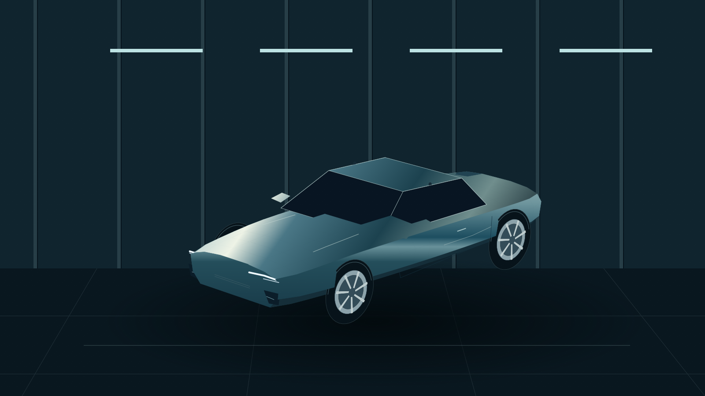

車両を探す
全512台はゲーム用の独自設計です。性能・設計年・価格はゲーム内の設定値です。比較ボタンで3台まで並べられます。
特別コンセプト （1）
-
燈路 001
独自設計設計年 20264WD5,000 PS最高速 1,000 km/hOZ-001
燈路シリーズの独自設計モデル。高出力と長いホイールベースを持つゲーム専用コンセプト。速度の高い区間では早めの制動を心がける。
30,000,000 Z
特別販売を見る
初期車両 （66）
翠環 002
独自設計設計年 1985FR143 PS最高速 195 km/hOZ-002
翠環シリーズの独自設計モデル。後輪の荷重を感じながら、減速から旋回、再加速へ滑らかにつなぐ。
初期車両
ガレージで確認白澪 003
独自設計設計年 1992FR255 PS最高速 250 km/hOZ-003
白澪シリーズの独自設計モデル。後輪の荷重を感じながら、減速から旋回、再加速へ滑らかにつなぐ。
初期車両
ガレージで確認空舟 004
独自設計設計年 19914WD282 PS最高速 255 km/hOZ-004
空舟シリーズの独自設計モデル。四輪の駆動力を生かし、路面に合わせてアクセルを段階的に開ける。
初期車両
ガレージで確認宵層 005
独自設計設計年 1972FR158 PS最高速 206 km/hOZ-005
宵層シリーズの独自設計モデル。後輪の荷重を感じながら、減速から旋回、再加速へ滑らかにつなぐ。
初期車両
ガレージで確認珀樹 006
独自設計設計年 1989MR172 PS最高速 224 km/hOZ-006
珀樹シリーズの独自設計モデル。車体中央に集めた重量を生かし、小さな舵角で連続コーナーをつなぐ。
初期車両
ガレージで確認水鋼 007
独自設計設計年 1974RR212 PS最高速 231 km/hOZ-007
水鋼シリーズの独自設計モデル。後輪への荷重を生かして加速し、進入時は急な操作を避ける。
初期車両
ガレージで確認晴律 008
独自設計設計年 1987MR325 PS最高速 270 km/hOZ-008
晴律シリーズの独自設計モデル。車体中央に集めた重量を生かし、小さな舵角で連続コーナーをつなぐ。
初期車両
ガレージで確認燈路 009
独自設計設計年 1968FR309 PS最高速 243 km/hOZ-009
燈路シリーズの独自設計モデル。後輪の荷重を感じながら、減速から旋回、再加速へ滑らかにつなぐ。
初期車両
ガレージで確認翠環 010
独自設計設計年 1967FR184 PS最高速 217 km/hOZ-010
翠環シリーズの独自設計モデル。後輪の荷重を感じながら、減速から旋回、再加速へ滑らかにつなぐ。
初期車両
ガレージで確認白澪 011
独自設計設計年 1988FF147 PS最高速 203 km/hOZ-011
白澪シリーズの独自設計モデル。進入で十分に減速し、前輪のグリップを残しながら出口へ加速する。
初期車両
ガレージで確認空舟 012
独自設計設計年 1962RR41 PS最高速 122 km/hOZ-012
空舟シリーズの独自設計モデル。後輪への荷重を生かして加速し、進入時は急な操作を避ける。
初期車両
ガレージで確認宵層 013
独自設計設計年 1967FR151 PS最高速 197 km/hOZ-013
宵層シリーズの独自設計モデル。後輪の荷重を感じながら、減速から旋回、再加速へ滑らかにつなぐ。
初期車両
ガレージで確認珀樹 014
独自設計設計年 1969FR132 PS最高速 193 km/hOZ-014
珀樹シリーズの独自設計モデル。後輪の荷重を感じながら、減速から旋回、再加速へ滑らかにつなぐ。
初期車両
ガレージで確認水鋼 015
独自設計設計年 1971FR169 PS最高速 211 km/hOZ-015
水鋼シリーズの独自設計モデル。後輪の荷重を感じながら、減速から旋回、再加速へ滑らかにつなぐ。
初期車両
ガレージで確認晴律 016
独自設計設計年 1973FR116 PS最高速 184 km/hOZ-016
晴律シリーズの独自設計モデル。後輪の荷重を感じながら、減速から旋回、再加速へ滑らかにつなぐ。
初期車両
ガレージで確認燈路 017
独自設計設計年 1976FR137 PS最高速 191 km/hOZ-017
燈路シリーズの独自設計モデル。後輪の荷重を感じながら、減速から旋回、再加速へ滑らかにつなぐ。
初期車両
ガレージで確認翠環 018
独自設計設計年 1978FR145 PS最高速 196 km/hOZ-018
翠環シリーズの独自設計モデル。後輪の荷重を感じながら、減速から旋回、再加速へ滑らかにつなぐ。
初期車両
ガレージで確認白澪 019
独自設計設計年 1981FR184 PS最高速 215 km/hOZ-019
白澪シリーズの独自設計モデル。後輪の荷重を感じながら、減速から旋回、再加速へ滑らかにつなぐ。
初期車両
ガレージで確認空舟 020
独自設計設計年 1984FR191 PS最高速 221 km/hOZ-020
空舟シリーズの独自設計モデル。後輪の荷重を感じながら、減速から旋回、再加速へ滑らかにつなぐ。
初期車両
ガレージで確認宵層 021
独自設計設計年 1986FF122 PS最高速 180 km/hOZ-021
宵層シリーズの独自設計モデル。進入で十分に減速し、前輪のグリップを残しながら出口へ加速する。
初期車両
ガレージで確認珀樹 022
独自設計設計年 1987FR238 PS最高速 236 km/hOZ-022
珀樹シリーズの独自設計モデル。後輪の荷重を感じながら、減速から旋回、再加速へ滑らかにつなぐ。
初期車両
ガレージで確認水鋼 023
独自設計設計年 19894WD214 PS最高速 218 km/hOZ-023
水鋼シリーズの独自設計モデル。四輪の駆動力を生かし、路面に合わせてアクセルを段階的に開ける。
初期車両
ガレージで確認晴律 024
独自設計設計年 1990FR124 PS最高速 189 km/hOZ-024
晴律シリーズの独自設計モデル。後輪の荷重を感じながら、減速から旋回、再加速へ滑らかにつなぐ。
初期車両
ガレージで確認燈路 025
独自設計設計年 1991MR278 PS最高速 257 km/hOZ-025
燈路シリーズの独自設計モデル。車体中央に集めた重量を生かし、小さな舵角で連続コーナーをつなぐ。
初期車両
ガレージで確認翠環 026
独自設計設計年 1993FR299 PS最高速 265 km/hOZ-026
翠環シリーズの独自設計モデル。後輪の荷重を感じながら、減速から旋回、再加速へ滑らかにつなぐ。
初期車両
ガレージで確認白澪 027
独自設計設計年 19954WD263 PS最高速 236 km/hOZ-027
白澪シリーズの独自設計モデル。四輪の駆動力を生かし、路面に合わせてアクセルを段階的に開ける。
初期車両
ガレージで確認空舟 028
独自設計設計年 19974WD285 PS最高速 241 km/hOZ-028
空舟シリーズの独自設計モデル。四輪の駆動力を生かし、路面に合わせてアクセルを段階的に開ける。
初期車両
ガレージで確認宵層 029
独自設計設計年 19984WD251 PS最高速 231 km/hOZ-029
宵層シリーズの独自設計モデル。四輪の駆動力を生かし、路面に合わせてアクセルを段階的に開ける。
初期車両
ガレージで確認珀樹 030
独自設計設計年 1999FR242 PS最高速 241 km/hOZ-030
珀樹シリーズの独自設計モデル。後輪の荷重を感じながら、減速から旋回、再加速へ滑らかにつなぐ。
初期車両
ガレージで確認水鋼 031
独自設計設計年 1999FR248 PS最高速 246 km/hOZ-031
水鋼シリーズの独自設計モデル。後輪の荷重を感じながら、減速から旋回、再加速へ滑らかにつなぐ。
初期車両
ガレージで確認晴律 032
独自設計設計年 1964RR93 PS最高速 163 km/hOZ-032
晴律シリーズの独自設計モデル。後輪への荷重を生かして加速し、進入時は急な操作を避ける。
初期車両
ガレージで確認燈路 033
独自設計設計年 1973FR172 PS最高速 214 km/hOZ-033
燈路シリーズの独自設計モデル。後輪の荷重を感じながら、減速から旋回、再加速へ滑らかにつなぐ。
初期車両
ガレージで確認翠環 034
独自設計設計年 19844WD268 PS最高速 232 km/hOZ-034
翠環シリーズの独自設計モデル。四輪の駆動力を生かし、路面に合わせてアクセルを段階的に開ける。
初期車両
ガレージで確認白澪 035
独自設計設計年 1988FR210 PS最高速 237 km/hOZ-035
白澪シリーズの独自設計モデル。後輪の荷重を感じながら、減速から旋回、再加速へ滑らかにつなぐ。
初期車両
ガレージで確認空舟 036
独自設計設計年 1990FR228 PS最高速 245 km/hOZ-036
空舟シリーズの独自設計モデル。後輪の荷重を感じながら、減速から旋回、再加速へ滑らかにつなぐ。
初期車両
ガレージで確認宵層 037
独自設計設計年 1989FF142 PS最高速 202 km/hOZ-037
宵層シリーズの独自設計モデル。進入で十分に減速し、前輪のグリップを残しながら出口へ加速する。
初期車両
ガレージで確認珀樹 038
独自設計設計年 1996RR288 PS最高速 273 km/hOZ-038
珀樹シリーズの独自設計モデル。後輪への荷重を生かして加速し、進入時は急な操作を避ける。
初期車両
ガレージで確認水鋼 039
独自設計設計年 1968FR129 PS最高速 193 km/hOZ-039
水鋼シリーズの独自設計モデル。後輪の荷重を感じながら、減速から旋回、再加速へ滑らかにつなぐ。
初期車両
ガレージで確認晴律 040
独自設計設計年 1970FR148 PS最高速 198 km/hOZ-040
晴律シリーズの独自設計モデル。後輪の荷重を感じながら、減速から旋回、再加速へ滑らかにつなぐ。
初期車両
ガレージで確認燈路 041
独自設計設計年 1976MR196 PS最高速 231 km/hOZ-041
燈路シリーズの独自設計モデル。車体中央に集めた重量を生かし、小さな舵角で連続コーナーをつなぐ。
初期車両
ガレージで確認翠環 042
独自設計設計年 19864WD244 PS最高速 228 km/hOZ-042
翠環シリーズの独自設計モデル。四輪の駆動力を生かし、路面に合わせてアクセルを段階的に開ける。
初期車両
ガレージで確認白澪 043
独自設計設計年 1989MR438 PS最高速 304 km/hOZ-043
白澪シリーズの独自設計モデル。車体中央に集めた重量を生かし、小さな舵角で連続コーナーをつなぐ。
初期車両
ガレージで確認空舟 044
独自設計設計年 1997MR342 PS最高速 275 km/hOZ-044
空舟シリーズの独自設計モデル。車体中央に集めた重量を生かし、小さな舵角で連続コーナーをつなぐ。
初期車両
ガレージで確認宵層 045
独自設計設計年 1965FF81 PS最高速 153 km/hOZ-045
宵層シリーズの独自設計モデル。進入で十分に減速し、前輪のグリップを残しながら出口へ加速する。
初期車両
ガレージで確認珀樹 046
独自設計設計年 1971FR198 PS最高速 224 km/hOZ-046
珀樹シリーズの独自設計モデル。後輪の荷重を感じながら、減速から旋回、再加速へ滑らかにつなぐ。
初期車両
ガレージで確認水鋼 047
独自設計設計年 1974FR146 PS最高速 211 km/hOZ-047
水鋼シリーズの独自設計モデル。後輪の荷重を感じながら、減速から旋回、再加速へ滑らかにつなぐ。
初期車両
ガレージで確認晴律 048
独自設計設計年 1987MR218 PS最高速 237 km/hOZ-048
晴律シリーズの独自設計モデル。車体中央に集めた重量を生かし、小さな舵角で連続コーナーをつなぐ。
初期車両
ガレージで確認燈路 049
独自設計設計年 1996FR306 PS最高速 265 km/hOZ-049
燈路シリーズの独自設計モデル。後輪の荷重を感じながら、減速から旋回、再加速へ滑らかにつなぐ。
初期車両
ガレージで確認翠環 050
独自設計設計年 1972RR144 PS最高速 206 km/hOZ-050
翠環シリーズの独自設計モデル。後輪への荷重を生かして加速し、進入時は急な操作を避ける。
初期車両
ガレージで確認白澪 051
独自設計設計年 1985FF128 PS最高速 201 km/hOZ-051
白澪シリーズの独自設計モデル。進入で十分に減速し、前輪のグリップを残しながら出口へ加速する。
初期車両
ガレージで確認空舟 052
独自設計設計年 1994FF172 PS最高速 221 km/hOZ-052
空舟シリーズの独自設計モデル。進入で十分に減速し、前輪のグリップを残しながら出口へ加速する。
初期車両
ガレージで確認宵層 053
独自設計設計年 1985FR179 PS最高速 210 km/hOZ-053
宵層シリーズの独自設計モデル。後輪の荷重を感じながら、減速から旋回、再加速へ滑らかにつなぐ。
初期車両
ガレージで確認珀樹 054
独自設計設計年 1977RR114 PS最高速 182 km/hOZ-054
珀樹シリーズの独自設計モデル。後輪への荷重を生かして加速し、進入時は急な操作を避ける。
初期車両
ガレージで確認水鋼 055
独自設計設計年 1960FR265 PS最高速 214 km/hOZ-055
水鋼シリーズの独自設計モデル。後輪の荷重を感じながら、減速から旋回、再加速へ滑らかにつなぐ。
初期車両
ガレージで確認晴律 056
独自設計設計年 1963FR310 PS最高速 238 km/hOZ-056
晴律シリーズの独自設計モデル。後輪の荷重を感じながら、減速から旋回、再加速へ滑らかにつなぐ。
初期車両
ガレージで確認燈路 057
独自設計設計年 1965FR281 PS最高速 237 km/hOZ-057
燈路シリーズの独自設計モデル。後輪の荷重を感じながら、減速から旋回、再加速へ滑らかにつなぐ。
初期車両
ガレージで確認翠環 058
独自設計設計年 1969FR378 PS最高速 249 km/hOZ-058
翠環シリーズの独自設計モデル。後輪の荷重を感じながら、減速から旋回、再加速へ滑らかにつなぐ。
初期車両
ガレージで確認白澪 059
独自設計設計年 1970FR354 PS最高速 247 km/hOZ-059
白澪シリーズの独自設計モデル。後輪の荷重を感じながら、減速から旋回、再加速へ滑らかにつなぐ。
初期車両
ガレージで確認空舟 060
独自設計設計年 1976FR236 PS最高速 205 km/hOZ-060
空舟シリーズの独自設計モデル。後輪の荷重を感じながら、減速から旋回、再加速へ滑らかにつなぐ。
初期車両
ガレージで確認宵層 061
独自設計設計年 1984FR246 PS最高速 233 km/hOZ-061
宵層シリーズの独自設計モデル。後輪の荷重を感じながら、減速から旋回、再加速へ滑らかにつなぐ。
初期車両
ガレージで確認珀樹 062
独自設計設計年 1988FR259 PS最高速 241 km/hOZ-062
珀樹シリーズの独自設計モデル。後輪の荷重を感じながら、減速から旋回、再加速へ滑らかにつなぐ。
初期車両
ガレージで確認水鋼 063
独自設計設計年 1990FR380 PS最高速 278 km/hOZ-063
水鋼シリーズの独自設計モデル。後輪の荷重を感じながら、減速から旋回、再加速へ滑らかにつなぐ。
初期車両
ガレージで確認晴律 064
独自設計設計年 1997FR421 PS最高速 290 km/hOZ-064
晴律シリーズの独自設計モデル。後輪の荷重を感じながら、減速から旋回、再加速へ滑らかにつなぐ。
初期車両
ガレージで確認燈路 065
独自設計設計年 2021FF116 PS最高速 174 km/hOZ-065
燈路シリーズの独自設計モデル。進入で十分に減速し、前輪のグリップを残しながら出口へ加速する。
初期車両
ガレージで確認翠環 066
独自設計設計年 2022FF123 PS最高速 175 km/hOZ-066
翠環シリーズの独自設計モデル。進入で十分に減速し、前輪のグリップを残しながら出口へ加速する。
初期車両
ガレージで確認白澪 067
独自設計設計年 2023FF82 PS最高速 166 km/hOZ-067
白澪シリーズの独自設計モデル。進入で十分に減速し、前輪のグリップを残しながら出口へ加速する。
初期車両
ガレージで確認
クラシックスタイル （245）
空舟 068
独自設計設計年 1958FR68 PS最高速 146 km/hOZ-068
空舟シリーズの独自設計モデル。後輪の荷重を感じながら、減速から旋回、再加速へ滑らかにつなぐ。
価格 4,300 Z
ショップで確認宵層 069
独自設計設計年 1963FR88 PS最高速 172 km/hOZ-069
宵層シリーズの独自設計モデル。後輪の荷重を感じながら、減速から旋回、再加速へ滑らかにつなぐ。
価格 8,200 Z
ショップで確認珀樹 070
独自設計設計年 1964FR121 PS最高速 164 km/hOZ-070
珀樹シリーズの独自設計モデル。後輪の荷重を感じながら、減速から旋回、再加速へ滑らかにつなぐ。
価格 7,400 Z
ショップで確認水鋼 071
独自設計設計年 1966FR153 PS最高速 202 km/hOZ-071
水鋼シリーズの独自設計モデル。後輪の荷重を感じながら、減速から旋回、再加速へ滑らかにつなぐ。
価格 16,800 Z
ショップで確認晴律 072
独自設計設計年 1968FR108 PS最高速 177 km/hOZ-072
晴律シリーズの独自設計モデル。後輪の荷重を感じながら、減速から旋回、再加速へ滑らかにつなぐ。
価格 9,600 Z
ショップで確認燈路 073
独自設計設計年 1969FR135 PS最高速 201 km/hOZ-073
燈路シリーズの独自設計モデル。後輪の荷重を感じながら、減速から旋回、再加速へ滑らかにつなぐ。
価格 16,200 Z
ショップで確認翠環 074
独自設計設計年 1970RR62 PS最高速 126 km/hOZ-074
翠環シリーズの独自設計モデル。後輪への荷重を生かして加速し、進入時は急な操作を避ける。
価格 2,700 Z
ショップで確認白澪 075
独自設計設計年 1972FR107 PS最高速 158 km/hOZ-075
白澪シリーズの独自設計モデル。後輪の荷重を感じながら、減速から旋回、再加速へ滑らかにつなぐ。
価格 6,200 Z
ショップで確認空舟 076
独自設計設計年 1974FR150 PS最高速 193 km/hOZ-076
空舟シリーズの独自設計モデル。後輪の荷重を感じながら、減速から旋回、再加速へ滑らかにつなぐ。
価格 14,300 Z
ショップで確認宵層 077
独自設計設計年 1975FR172 PS最高速 208 km/hOZ-077
宵層シリーズの独自設計モデル。後輪の荷重を感じながら、減速から旋回、再加速へ滑らかにつなぐ。
価格 19,100 Z
ショップで確認珀樹 078
独自設計設計年 1977FR103 PS最高速 153 km/hOZ-078
珀樹シリーズの独自設計モデル。後輪の荷重を感じながら、減速から旋回、再加速へ滑らかにつなぐ。
価格 5,400 Z
ショップで確認水鋼 079
独自設計設計年 1978MR157 PS最高速 212 km/hOZ-079
水鋼シリーズの独自設計モデル。車体中央に集めた重量を生かし、小さな舵角で連続コーナーをつなぐ。
価格 20,000 Z
ショップで確認晴律 080
独自設計設計年 1979FF79 PS最高速 153 km/hOZ-080
晴律シリーズの独自設計モデル。進入で十分に減速し、前輪のグリップを残しながら出口へ加速する。
価格 5,100 Z
ショップで確認燈路 081
独自設計設計年 19814WD155 PS最高速 195 km/hOZ-081
燈路シリーズの独自設計モデル。四輪の駆動力を生かし、路面に合わせてアクセルを段階的に開ける。
価格 14,900 Z
ショップで確認翠環 082
独自設計設計年 1982FR198 PS最高速 221 km/hOZ-082
翠環シリーズの独自設計モデル。後輪の荷重を感じながら、減速から旋回、再加速へ滑らかにつなぐ。
価格 23,900 Z
ショップで確認白澪 083
独自設計設計年 1983FR207 PS最高速 221 km/hOZ-083
白澪シリーズの独自設計モデル。後輪の荷重を感じながら、減速から旋回、再加速へ滑らかにつなぐ。
価格 24,100 Z
ショップで確認空舟 084
独自設計設計年 1984FR121 PS最高速 187 km/hOZ-084
空舟シリーズの独自設計モデル。後輪の荷重を感じながら、減速から旋回、再加速へ滑らかにつなぐ。
価格 12,200 Z
ショップで確認宵層 085
独自設計設計年 1985FF112 PS最高速 176 km/hOZ-085
宵層シリーズの独自設計モデル。進入で十分に減速し、前輪のグリップを残しながら出口へ加速する。
価格 9,500 Z
ショップで確認珀樹 086
独自設計設計年 1986FR214 PS最高速 233 km/hOZ-086
珀樹シリーズの独自設計モデル。後輪の荷重を感じながら、減速から旋回、再加速へ滑らかにつなぐ。
価格 28,700 Z
ショップで確認水鋼 087
独自設計設計年 19884WD194 PS最高速 214 km/hOZ-087
水鋼シリーズの独自設計モデル。四輪の駆動力を生かし、路面に合わせてアクセルを段階的に開ける。
価格 21,400 Z
ショップで確認晴律 088
独自設計設計年 1989FF135 PS最高速 184 km/hOZ-088
晴律シリーズの独自設計モデル。進入で十分に減速し、前輪のグリップを残しながら出口へ加速する。
価格 11,700 Z
ショップで確認燈路 089
独自設計設計年 1990RR158 PS最高速 208 km/hOZ-089
燈路シリーズの独自設計モデル。後輪への荷重を生かして加速し、進入時は急な操作を避ける。
価格 18,800 Z
ショップで確認翠環 090
独自設計設計年 19914WD257 PS最高速 241 km/hOZ-090
翠環シリーズの独自設計モデル。四輪の駆動力を生かし、路面に合わせてアクセルを段階的に開ける。
価格 32,900 Z
ショップで確認白澪 091
独自設計設計年 1992MR204 PS最高速 234 km/hOZ-091
白澪シリーズの独自設計モデル。車体中央に集めた重量を生かし、小さな舵角で連続コーナーをつなぐ。
価格 28,900 Z
ショップで確認空舟 092
独自設計設計年 1994MR352 PS最高速 287 km/hOZ-092
空舟シリーズの独自設計モデル。車体中央に集めた重量を生かし、小さな舵角で連続コーナーをつなぐ。
価格 64,400 Z
ショップで確認宵層 093
独自設計設計年 1996FR284 PS最高速 254 km/hOZ-093
宵層シリーズの独自設計モデル。後輪の荷重を感じながら、減速から旋回、再加速へ滑らかにつなぐ。
価格 39,100 Z
ショップで確認珀樹 094
独自設計設計年 19984WD292 PS最高速 255 km/hOZ-094
珀樹シリーズの独自設計モデル。四輪の駆動力を生かし、路面に合わせてアクセルを段階的に開ける。
価格 39,800 Z
ショップで確認水鋼 095
独自設計設計年 1999FR320 PS最高速 272 km/hOZ-095
水鋼シリーズの独自設計モデル。後輪の荷重を感じながら、減速から旋回、再加速へ滑らかにつなぐ。
価格 48,700 Z
ショップで確認晴律 096
独自設計設計年 1931FR95 PS最高速 138 km/hOZ-096
晴律シリーズの独自設計モデル。後輪の荷重を感じながら、減速から旋回、再加速へ滑らかにつなぐ。
価格 7,800 Z
ショップで確認燈路 097
独自設計設計年 1954FR112 PS最高速 163 km/hOZ-097
燈路シリーズの独自設計モデル。後輪の荷重を感じながら、減速から旋回、再加速へ滑らかにつなぐ。
価格 7,100 Z
ショップで確認翠環 098
独自設計設計年 1956FR164 PS最高速 208 km/hOZ-098
翠環シリーズの独自設計モデル。後輪の荷重を感じながら、減速から旋回、再加速へ滑らかにつなぐ。
価格 18,900 Z
ショップで確認白澪 099
独自設計設計年 1959RR44 PS最高速 122 km/hOZ-099
白澪シリーズの独自設計モデル。後輪への荷重を生かして加速し、進入時は急な操作を避ける。
価格 2,600 Z
ショップで確認空舟 100
独自設計設計年 1967RR161 PS最高速 213 km/hOZ-100
空舟シリーズの独自設計モデル。後輪への荷重を生かして加速し、進入時は急な操作を避ける。
価格 20,400 Z
ショップで確認宵層 101
独自設計設計年 1970FR128 PS最高速 181 km/hOZ-101
宵層シリーズの独自設計モデル。後輪の荷重を感じながら、減速から旋回、再加速へ滑らかにつなぐ。
価格 10,900 Z
ショップで確認珀樹 102
独自設計設計年 1975FR183 PS最高速 212 km/hOZ-102
珀樹シリーズの独自設計モデル。後輪の荷重を感じながら、減速から旋回、再加速へ滑らかにつなぐ。
価格 20,600 Z
ショップで確認水鋼 103
独自設計設計年 1982FF115 PS最高速 178 km/hOZ-103
水鋼シリーズの独自設計モデル。進入で十分に減速し、前輪のグリップを残しながら出口へ加速する。
価格 10,000 Z
ショップで確認晴律 104
独自設計設計年 19834WD272 PS最高速 244 km/hOZ-104
晴律シリーズの独自設計モデル。四輪の駆動力を生かし、路面に合わせてアクセルを段階的に開ける。
価格 34,400 Z
ショップで確認燈路 105
独自設計設計年 1987FR181 PS最高速 216 km/hOZ-105
燈路シリーズの独自設計モデル。後輪の荷重を感じながら、減速から旋回、再加速へ滑らかにつなぐ。
価格 21,800 Z
ショップで確認翠環 106
独自設計設計年 1990RR286 PS最高速 269 km/hOZ-106
翠環シリーズの独自設計モデル。後輪への荷重を生かして加速し、進入時は急な操作を避ける。
価格 46,400 Z
ショップで確認白澪 107
独自設計設計年 1993FR282 PS最高速 257 km/hOZ-107
白澪シリーズの独自設計モデル。後輪の荷重を感じながら、減速から旋回、再加速へ滑らかにつなぐ。
価格 40,500 Z
ショップで確認空舟 108
独自設計設計年 1996MR418 PS最高速 306 km/hOZ-108
空舟シリーズの独自設計モデル。車体中央に集めた重量を生かし、小さな舵角で連続コーナーをつなぐ。
価格 77,200 Z
ショップで確認宵層 109
独自設計設計年 1998FR322 PS最高速 264 km/hOZ-109
宵層シリーズの独自設計モデル。後輪の荷重を感じながら、減速から旋回、再加速へ滑らかにつなぐ。
価格 44,700 Z
ショップで確認珀樹 110
独自設計設計年 1929FR94 PS最高速 152 km/hOZ-110
珀樹シリーズの独自設計モデル。後輪の荷重を感じながら、減速から旋回、再加速へ滑らかにつなぐ。
価格 9,300 Z
ショップで確認水鋼 111
独自設計設計年 1947FR83 PS最高速 162 km/hOZ-111
水鋼シリーズの独自設計モデル。後輪の荷重を感じながら、減速から旋回、再加速へ滑らかにつなぐ。
価格 6,500 Z
ショップで確認晴律 112
独自設計設計年 1956FR228 PS最高速 238 km/hOZ-112
晴律シリーズの独自設計モデル。後輪の荷重を感じながら、減速から旋回、再加速へ滑らかにつなぐ。
価格 31,000 Z
ショップで確認燈路 113
独自設計設計年 1966RR57 PS最高速 134 km/hOZ-113
燈路シリーズの独自設計モデル。後輪への荷重を生かして加速し、進入時は急な操作を避ける。
価格 3,200 Z
ショップで確認翠環 114
独自設計設計年 1972MR228 PS最高速 244 km/hOZ-114
翠環シリーズの独自設計モデル。車体中央に集めた重量を生かし、小さな舵角で連続コーナーをつなぐ。
価格 33,500 Z
ショップで確認白澪 115
独自設計設計年 1976MR241 PS最高速 231 km/hOZ-115
白澪シリーズの独自設計モデル。車体中央に集めた重量を生かし、小さな舵角で連続コーナーをつなぐ。
価格 28,500 Z
ショップで確認空舟 116
独自設計設計年 1979FR141 PS最高速 188 km/hOZ-116
空舟シリーズの独自設計モデル。後輪の荷重を感じながら、減速から旋回、再加速へ滑らかにつなぐ。
価格 12,800 Z
ショップで確認宵層 117
独自設計設計年 1981MR276 PS最高速 260 km/hOZ-117
宵層シリーズの独自設計モデル。車体中央に集めた重量を生かし、小さな舵角で連続コーナーをつなぐ。
価格 41,800 Z
ショップで確認珀樹 118
独自設計設計年 1986FF173 PS最高速 205 km/hOZ-118
珀樹シリーズの独自設計モデル。進入で十分に減速し、前輪のグリップを残しながら出口へ加速する。
価格 18,200 Z
ショップで確認水鋼 119
独自設計設計年 19894WD239 PS最高速 237 km/hOZ-119
水鋼シリーズの独自設計モデル。四輪の駆動力を生かし、路面に合わせてアクセルを段階的に開ける。
価格 30,800 Z
ショップで確認晴律 120
独自設計設計年 1992FR258 PS最高速 249 km/hOZ-120
晴律シリーズの独自設計モデル。後輪の荷重を感じながら、減速から旋回、再加速へ滑らかにつなぐ。
価格 36,300 Z
ショップで確認燈路 121
独自設計設計年 1995MR473 PS最高速 316 km/hOZ-121
燈路シリーズの独自設計モデル。車体中央に集めた重量を生かし、小さな舵角で連続コーナーをつなぐ。
価格 84,800 Z
ショップで確認翠環 122
独自設計設計年 1998FR349 PS最高速 282 km/hOZ-122
翠環シリーズの独自設計モデル。後輪の荷重を感じながら、減速から旋回、再加速へ滑らかにつなぐ。
価格 54,700 Z
ショップで確認白澪 123
独自設計設計年 1934FR108 PS最高速 151 km/hOZ-123
白澪シリーズの独自設計モデル。後輪の荷重を感じながら、減速から旋回、再加速へ滑らかにつなぐ。
価格 9,400 Z
ショップで確認空舟 124
独自設計設計年 1952FR148 PS最高速 194 km/hOZ-124
空舟シリーズの独自設計モデル。後輪の荷重を感じながら、減速から旋回、再加速へ滑らかにつなぐ。
価格 14,500 Z
ショップで確認宵層 125
独自設計設計年 1957FR126 PS最高速 183 km/hOZ-125
宵層シリーズの独自設計モデル。後輪の荷重を感じながら、減速から旋回、再加速へ滑らかにつなぐ。
価格 11,300 Z
ショップで確認珀樹 126
独自設計設計年 1960FR146 PS最高速 177 km/hOZ-126
珀樹シリーズの独自設計モデル。後輪の荷重を感じながら、減速から旋回、再加速へ滑らかにつなぐ。
価格 10,400 Z
ショップで確認水鋼 127
独自設計設計年 1965FF65 PS最高速 147 km/hOZ-127
水鋼シリーズの独自設計モデル。進入で十分に減速し、前輪のグリップを残しながら出口へ加速する。
価格 4,400 Z
ショップで確認晴律 128
独自設計設計年 1969FR172 PS最高速 208 km/hOZ-128
晴律シリーズの独自設計モデル。後輪の荷重を感じながら、減速から旋回、再加速へ滑らかにつなぐ。
価格 19,100 Z
ショップで確認燈路 129
独自設計設計年 1971MR142 PS最高速 199 km/hOZ-129
燈路シリーズの独自設計モデル。車体中央に集めた重量を生かし、小さな舵角で連続コーナーをつなぐ。
価格 15,800 Z
ショップで確認翠環 130
独自設計設計年 1976FR120 PS最高速 178 km/hOZ-130
翠環シリーズの独自設計モデル。後輪の荷重を感じながら、減速から旋回、再加速へ滑らかにつなぐ。
価格 10,100 Z
ショップで確認白澪 131
独自設計設計年 1979FR263 PS最高速 242 km/hOZ-131
白澪シリーズの独自設計モデル。後輪の荷重を感じながら、減速から旋回、再加速へ滑らかにつなぐ。
価格 33,400 Z
ショップで確認空舟 132
独自設計設計年 1984FR207 PS最高速 224 km/hOZ-132
空舟シリーズの独自設計モデル。後輪の荷重を感じながら、減速から旋回、再加速へ滑らかにつなぐ。
価格 25,200 Z
ショップで確認宵層 133
独自設計設計年 1990FR282 PS最高速 251 km/hOZ-133
宵層シリーズの独自設計モデル。後輪の荷重を感じながら、減速から旋回、再加速へ滑らかにつなぐ。
価格 37,700 Z
ショップで確認珀樹 134
独自設計設計年 1995MR455 PS最高速 318 km/hOZ-134
珀樹シリーズの独自設計モデル。車体中央に集めた重量を生かし、小さな舵角で連続コーナーをつなぐ。
価格 85,700 Z
ショップで確認水鋼 135
独自設計設計年 1938FR116 PS最高速 156 km/hOZ-135
水鋼シリーズの独自設計モデル。後輪の荷重を感じながら、減速から旋回、再加速へ滑らかにつなぐ。
価格 10,300 Z
ショップで確認晴律 136
独自設計設計年 1952FF37 PS最高速 114 km/hOZ-136
晴律シリーズの独自設計モデル。進入で十分に減速し、前輪のグリップを残しながら出口へ加速する。
価格 2,400 Z
ショップで確認燈路 137
独自設計設計年 1958FR117 PS最高速 170 km/hOZ-137
燈路シリーズの独自設計モデル。後輪の荷重を感じながら、減速から旋回、再加速へ滑らかにつなぐ。
価格 8,400 Z
ショップで確認翠環 138
独自設計設計年 1965RR91 PS最高速 176 km/hOZ-138
翠環シリーズの独自設計モデル。後輪への荷重を生かして加速し、進入時は急な操作を避ける。
価格 9,100 Z
ショップで確認白澪 139
独自設計設計年 1971FF86 PS最高速 155 km/hOZ-139
白澪シリーズの独自設計モデル。進入で十分に減速し、前輪のグリップを残しながら出口へ加速する。
価格 5,400 Z
ショップで確認空舟 140
独自設計設計年 1975FF170 PS最高速 199 km/hOZ-140
空舟シリーズの独自設計モデル。進入で十分に減速し、前輪のグリップを残しながら出口へ加速する。
価格 16,300 Z
ショップで確認宵層 141
独自設計設計年 1979FR162 PS最高速 204 km/hOZ-141
宵層シリーズの独自設計モデル。後輪の荷重を感じながら、減速から旋回、再加速へ滑らかにつなぐ。
価格 17,600 Z
ショップで確認珀樹 142
独自設計設計年 1985MR239 PS最高速 232 km/hOZ-142
珀樹シリーズの独自設計モデル。車体中央に集めた重量を生かし、小さな舵角で連続コーナーをつなぐ。
価格 28,900 Z
ショップで確認水鋼 143
独自設計設計年 1991FF137 PS最高速 192 km/hOZ-143
水鋼シリーズの独自設計モデル。進入で十分に減速し、前輪のグリップを残しながら出口へ加速する。
価格 13,800 Z
ショップで確認晴律 144
独自設計設計年 1997MR364 PS最高速 293 km/hOZ-144
晴律シリーズの独自設計モデル。車体中央に集めた重量を生かし、小さな舵角で連続コーナーをつなぐ。
価格 68,100 Z
ショップで確認燈路 145
独自設計設計年 1936FR115 PS最高速 146 km/hOZ-145
燈路シリーズの独自設計モデル。後輪の荷重を感じながら、減速から旋回、再加速へ滑らかにつなぐ。
価格 9,000 Z
ショップで確認翠環 146
独自設計設計年 1951FR125 PS最高速 155 km/hOZ-146
翠環シリーズの独自設計モデル。後輪の荷重を感じながら、減速から旋回、再加速へ滑らかにつなぐ。
価格 6,100 Z
ショップで確認白澪 147
独自設計設計年 1955FR195 PS最高速 185 km/hOZ-147
白澪シリーズの独自設計モデル。後輪の荷重を感じながら、減速から旋回、再加速へ滑らかにつなぐ。
価格 13,200 Z
ショップで確認空舟 148
独自設計設計年 1959FR205 PS最高速 175 km/hOZ-148
空舟シリーズの独自設計モデル。後輪の荷重を感じながら、減速から旋回、再加速へ滑らかにつなぐ。
価格 11,200 Z
ショップで確認宵層 149
独自設計設計年 1961FR214 PS最高速 171 km/hOZ-149
宵層シリーズの独自設計モデル。後輪の荷重を感じながら、減速から旋回、再加速へ滑らかにつなぐ。
価格 10,600 Z
ショップで確認珀樹 150
独自設計設計年 1963FR285 PS最高速 232 km/hOZ-150
珀樹シリーズの独自設計モデル。後輪の荷重を感じながら、減速から旋回、再加速へ滑らかにつなぐ。
価格 29,800 Z
ショップで確認水鋼 151
独自設計設計年 1966FR345 PS最高速 236 km/hOZ-151
水鋼シリーズの独自設計モデル。後輪の荷重を感じながら、減速から旋回、再加速へ滑らかにつなぐ。
価格 32,700 Z
ショップで確認晴律 152
独自設計設計年 1970FR417 PS最高速 254 km/hOZ-152
晴律シリーズの独自設計モデル。後輪の荷重を感じながら、減速から旋回、再加速へ滑らかにつなぐ。
価格 41,900 Z
ショップで確認燈路 153
独自設計設計年 1972FR143 PS最高速 147 km/hOZ-153
燈路シリーズの独自設計モデル。後輪の荷重を感じながら、減速から旋回、再加速へ滑らかにつなぐ。
価格 5,500 Z
ショップで確認翠環 154
独自設計設計年 1977FR197 PS最高速 184 km/hOZ-154
翠環シリーズの独自設計モデル。後輪の荷重を感じながら、減速から旋回、再加速へ滑らかにつなぐ。
価格 13,000 Z
ショップで確認白澪 155
独自設計設計年 1982FR206 PS最高速 210 km/hOZ-155
白澪シリーズの独自設計モデル。後輪の荷重を感じながら、減速から旋回、再加速へ滑らかにつなぐ。
価格 20,400 Z
ショップで確認空舟 156
独自設計設計年 1987FR267 PS最高速 244 km/hOZ-156
空舟シリーズの独自設計モデル。後輪の荷重を感じながら、減速から旋回、再加速へ滑らかにつなぐ。
価格 34,300 Z
ショップで確認宵層 157
独自設計設計年 1990FR309 PS最高速 223 km/hOZ-157
宵層シリーズの独自設計モデル。後輪の荷重を感じながら、減速から旋回、再加速へ滑らかにつなぐ。
価格 27,000 Z
ショップで確認珀樹 158
独自設計設計年 1994FR366 PS最高速 280 km/hOZ-158
珀樹シリーズの独自設計モデル。後輪の荷重を感じながら、減速から旋回、再加速へ滑らかにつなぐ。
価格 53,900 Z
ショップで確認水鋼 159
独自設計設計年 1998MR489 PS最高速 327 km/hOZ-159
水鋼シリーズの独自設計モデル。車体中央に集めた重量を生かし、小さな舵角で連続コーナーをつなぐ。
価格 92,600 Z
ショップで確認晴律 160
独自設計設計年 1958FR85 PS最高速 151 km/hOZ-160
晴律シリーズの独自設計モデル。後輪の荷重を感じながら、減速から旋回、再加速へ滑らかにつなぐ。
価格 4,900 Z
ショップで確認燈路 161
独自設計設計年 1965FR116 PS最高速 185 km/hOZ-161
燈路シリーズの独自設計モデル。後輪の荷重を感じながら、減速から旋回、再加速へ滑らかにつなぐ。
価格 11,600 Z
ショップで確認翠環 162
独自設計設計年 1972FF139 PS最高速 181 km/hOZ-162
翠環シリーズの独自設計モデル。進入で十分に減速し、前輪のグリップを残しながら出口へ加速する。
価格 11,100 Z
ショップで確認白澪 163
独自設計設計年 1989FR197 PS最高速 213 km/hOZ-163
白澪シリーズの独自設計モデル。後輪の荷重を感じながら、減速から旋回、再加速へ滑らかにつなぐ。
価格 21,200 Z
ショップで確認空舟 164
独自設計設計年 1997FF251 PS最高速 247 km/hOZ-164
空舟シリーズの独自設計モデル。進入で十分に減速し、前輪のグリップを残しながら出口へ加速する。
価格 35,300 Z
ショップで確認宵層 165
独自設計設計年 1946FR73 PS最高速 127 km/hOZ-165
宵層シリーズの独自設計モデル。後輪の荷重を感じながら、減速から旋回、再加速へ滑らかにつなぐ。
価格 2,800 Z
ショップで確認珀樹 166
独自設計設計年 1960RR132 PS最高速 171 km/hOZ-166
珀樹シリーズの独自設計モデル。後輪への荷重を生かして加速し、進入時は急な操作を避ける。
価格 8,900 Z
ショップで確認水鋼 167
独自設計設計年 1973RR102 PS最高速 176 km/hOZ-167
水鋼シリーズの独自設計モデル。後輪への荷重を生かして加速し、進入時は急な操作を避ける。
価格 9,300 Z
ショップで確認晴律 168
独自設計設計年 1986RR145 PS最高速 192 km/hOZ-168
晴律シリーズの独自設計モデル。後輪への荷重を生かして加速し、進入時は急な操作を避ける。
価格 13,900 Z
ショップで確認燈路 169
独自設計設計年 1948FR72 PS最高速 144 km/hOZ-169
燈路シリーズの独自設計モデル。後輪の荷重を感じながら、減速から旋回、再加速へ滑らかにつなぐ。
価格 4,100 Z
ショップで確認翠環 170
独自設計設計年 1959RR39 PS最高速 113 km/hOZ-170
翠環シリーズの独自設計モデル。後輪への荷重を生かして加速し、進入時は急な操作を避ける。
価格 2,400 Z
ショップで確認白澪 171
独自設計設計年 19814WD184 PS最高速 200 km/hOZ-171
白澪シリーズの独自設計モデル。四輪の駆動力を生かし、路面に合わせてアクセルを段階的に開ける。
価格 16,900 Z
ショップで確認空舟 172
独自設計設計年 1954FR173 PS最高速 213 km/hOZ-172
空舟シリーズの独自設計モデル。後輪の荷重を感じながら、減速から旋回、再加速へ滑らかにつなぐ。
価格 20,700 Z
ショップで確認宵層 173
独自設計設計年 1968RR102 PS最高速 166 km/hOZ-173
宵層シリーズの独自設計モデル。後輪への荷重を生かして加速し、進入時は急な操作を避ける。
価格 7,400 Z
ショップで確認珀樹 174
独自設計設計年 1982FR172 PS最高速 207 km/hOZ-174
珀樹シリーズの独自設計モデル。後輪の荷重を感じながら、減速から旋回、再加速へ滑らかにつなぐ。
価格 18,700 Z
ショップで確認水鋼 175
独自設計設計年 1998FF188 PS最高速 221 km/hOZ-175
水鋼シリーズの独自設計モデル。進入で十分に減速し、前輪のグリップを残しながら出口へ加速する。
価格 23,700 Z
ショップで確認晴律 176
独自設計設計年 1965FR148 PS最高速 174 km/hOZ-176
晴律シリーズの独自設計モデル。後輪の荷重を感じながら、減速から旋回、再加速へ滑らかにつなぐ。
価格 9,800 Z
ショップで確認燈路 177
独自設計設計年 1971FR273 PS最高速 211 km/hOZ-177
燈路シリーズの独自設計モデル。後輪の荷重を感じながら、減速から旋回、再加速へ滑らかにつなぐ。
価格 22,100 Z
ショップで確認翠環 178
独自設計設計年 1977FR331 PS最高速 238 km/hOZ-178
翠環シリーズの独自設計モデル。後輪の荷重を感じながら、減速から旋回、再加速へ滑らかにつなぐ。
価格 33,200 Z
ショップで確認白澪 179
独自設計設計年 1998FR337 PS最高速 262 km/hOZ-179
白澪シリーズの独自設計モデル。後輪の荷重を感じながら、減速から旋回、再加速へ滑らかにつなぐ。
価格 44,000 Z
ショップで確認空舟 180
独自設計設計年 1961RR51 PS最高速 122 km/hOZ-180
空舟シリーズの独自設計モデル。後輪への荷重を生かして加速し、進入時は急な操作を避ける。
価格 2,600 Z
ショップで確認宵層 181
独自設計設計年 1970RR100 PS最高速 177 km/hOZ-181
宵層シリーズの独自設計モデル。後輪への荷重を生かして加速し、進入時は急な操作を避ける。
価格 9,500 Z
ショップで確認珀樹 182
独自設計設計年 1977FR174 PS最高速 202 km/hOZ-182
珀樹シリーズの独自設計モデル。後輪の荷重を感じながら、減速から旋回、再加速へ滑らかにつなぐ。
価格 17,300 Z
ショップで確認水鋼 183
独自設計設計年 1993FF148 PS最高速 191 km/hOZ-183
水鋼シリーズの独自設計モデル。進入で十分に減速し、前輪のグリップを残しながら出口へ加速する。
価格 13,700 Z
ショップで確認晴律 184
独自設計設計年 1955FR182 PS最高速 173 km/hOZ-184
晴律シリーズの独自設計モデル。後輪の荷重を感じながら、減速から旋回、再加速へ滑らかにつなぐ。
価格 10,400 Z
ショップで確認燈路 185
独自設計設計年 1967FR294 PS最高速 227 km/hOZ-185
燈路シリーズの独自設計モデル。後輪の荷重を感じながら、減速から旋回、再加速へ滑らかにつなぐ。
価格 28,100 Z
ショップで確認翠環 186
独自設計設計年 1981FR167 PS最高速 170 km/hOZ-186
翠環シリーズの独自設計モデル。後輪の荷重を感じながら、減速から旋回、再加速へ滑らかにつなぐ。
価格 9,500 Z
ショップで確認白澪 187
独自設計設計年 1991FR271 PS最高速 254 km/hOZ-187
白澪シリーズの独自設計モデル。後輪の荷重を感じながら、減速から旋回、再加速へ滑らかにつなぐ。
価格 38,900 Z
ショップで確認空舟 188
独自設計設計年 1948FR61 PS最高速 131 km/hOZ-188
空舟シリーズの独自設計モデル。後輪の荷重を感じながら、減速から旋回、再加速へ滑らかにつなぐ。
価格 3,000 Z
ショップで確認宵層 189
独自設計設計年 1962RR47 PS最高速 130 km/hOZ-189
宵層シリーズの独自設計モデル。後輪への荷重を生かして加速し、進入時は急な操作を避ける。
価格 2,900 Z
ショップで確認珀樹 190
独自設計設計年 1972FR151 PS最高速 195 km/hOZ-190
珀樹シリーズの独自設計モデル。後輪の荷重を感じながら、減速から旋回、再加速へ滑らかにつなぐ。
価格 14,800 Z
ショップで確認水鋼 191
独自設計設計年 1953FR126 PS最高速 181 km/hOZ-191
水鋼シリーズの独自設計モデル。後輪の荷重を感じながら、減速から旋回、再加速へ滑らかにつなぐ。
価格 10,900 Z
ショップで確認晴律 192
独自設計設計年 1968FR225 PS最高速 228 km/hOZ-192
晴律シリーズの独自設計モデル。後輪の荷重を感じながら、減速から旋回、再加速へ滑らかにつなぐ。
価格 27,000 Z
ショップで確認燈路 193
独自設計設計年 19874WD216 PS最高速 218 km/hOZ-193
燈路シリーズの独自設計モデル。四輪の駆動力を生かし、路面に合わせてアクセルを段階的に開ける。
価格 23,200 Z
ショップで確認翠環 194
独自設計設計年 1951FR100 PS最高速 142 km/hOZ-194
翠環シリーズの独自設計モデル。後輪の荷重を感じながら、減速から旋回、再加速へ滑らかにつなぐ。
価格 4,100 Z
ショップで確認白澪 195
独自設計設計年 1964FR99 PS最高速 150 km/hOZ-195
白澪シリーズの独自設計モデル。後輪の荷重を感じながら、減速から旋回、再加速へ滑らかにつなぐ。
価格 4,900 Z
ショップで確認空舟 196
独自設計設計年 19864WD170 PS最高速 196 km/hOZ-196
空舟シリーズの独自設計モデル。四輪の駆動力を生かし、路面に合わせてアクセルを段階的に開ける。
価格 15,500 Z
ショップで確認宵層 197
独自設計設計年 1957FR62 PS最高速 129 km/hOZ-197
宵層シリーズの独自設計モデル。後輪の荷重を感じながら、減速から旋回、再加速へ滑らかにつなぐ。
価格 2,900 Z
ショップで確認珀樹 198
独自設計設計年 1971RR51 PS最高速 132 km/hOZ-198
珀樹シリーズの独自設計モデル。後輪への荷重を生かして加速し、進入時は急な操作を避ける。
価格 3,000 Z
ショップで確認水鋼 199
独自設計設計年 1991FF108 PS最高速 174 km/hOZ-199
水鋼シリーズの独自設計モデル。進入で十分に減速し、前輪のグリップを残しながら出口へ加速する。
価格 9,000 Z
ショップで確認晴律 200
独自設計設計年 1973FR153 PS最高速 186 km/hOZ-200
晴律シリーズの独自設計モデル。後輪の荷重を感じながら、減速から旋回、再加速へ滑らかにつなぐ。
価格 12,600 Z
ショップで確認燈路 201
独自設計設計年 19864WD187 PS最高速 205 km/hOZ-201
燈路シリーズの独自設計モデル。四輪の駆動力を生かし、路面に合わせてアクセルを段階的に開ける。
価格 18,400 Z
ショップで確認翠環 202
独自設計設計年 1976FR88 PS最高速 152 km/hOZ-202
翠環シリーズの独自設計モデル。後輪の荷重を感じながら、減速から旋回、再加速へ滑らかにつなぐ。
価格 5,000 Z
ショップで確認白澪 203
独自設計設計年 1988FF107 PS最高速 172 km/hOZ-203
白澪シリーズの独自設計モデル。進入で十分に減速し、前輪のグリップを残しながら出口へ加速する。
価格 8,600 Z
ショップで確認空舟 204
独自設計設計年 1997FF181 PS最高速 215 km/hOZ-204
空舟シリーズの独自設計モデル。進入で十分に減速し、前輪のグリップを残しながら出口へ加速する。
価格 21,500 Z
ショップで確認宵層 205
独自設計設計年 1960FR122 PS最高速 157 km/hOZ-205
宵層シリーズの独自設計モデル。後輪の荷重を感じながら、減速から旋回、再加速へ滑らかにつなぐ。
価格 6,400 Z
ショップで確認珀樹 206
独自設計設計年 1968FR148 PS最高速 175 km/hOZ-206
珀樹シリーズの独自設計モデル。後輪の荷重を感じながら、減速から旋回、再加速へ滑らかにつなぐ。
価格 10,000 Z
ショップで確認水鋼 207
独自設計設計年 1976FR214 PS最高速 217 km/hOZ-207
水鋼シリーズの独自設計モデル。後輪の荷重を感じながら、減速から旋回、再加速へ滑らかにつなぐ。
価格 22,900 Z
ショップで確認晴律 208
独自設計設計年 1955FR103 PS最高速 169 km/hOZ-208
晴律シリーズの独自設計モデル。後輪の荷重を感じながら、減速から旋回、再加速へ滑らかにつなぐ。
価格 7,900 Z
ショップで確認燈路 209
独自設計設計年 1966FR158 PS最高速 198 km/hOZ-209
燈路シリーズの独自設計モデル。後輪の荷重を感じながら、減速から旋回、再加速へ滑らかにつなぐ。
価格 15,800 Z
ショップで確認翠環 210
独自設計設計年 1964FR112 PS最高速 182 km/hOZ-210
翠環シリーズの独自設計モデル。後輪の荷重を感じながら、減速から旋回、再加速へ滑らかにつなぐ。
価格 10,800 Z
ショップで確認白澪 211
独自設計設計年 1982FR254 PS最高速 230 km/hOZ-211
白澪シリーズの独自設計モデル。後輪の荷重を感じながら、減速から旋回、再加速へ滑らかにつなぐ。
価格 28,400 Z
ショップで確認空舟 212
独自設計設計年 1967FR156 PS最高速 218 km/hOZ-212
空舟シリーズの独自設計モデル。後輪の荷重を感じながら、減速から旋回、再加速へ滑らかにつなぐ。
価格 45,000 Z
ショップで確認宵層 213
独自設計設計年 19944WD258 PS最高速 237 km/hOZ-213
宵層シリーズの独自設計モデル。四輪の駆動力を生かし、路面に合わせてアクセルを段階的に開ける。
価格 36,000 Z
ショップで確認珀樹 214
独自設計設計年 1993MR231 PS最高速 232 km/hOZ-214
珀樹シリーズの独自設計モデル。車体中央に集めた重量を生かし、小さな舵角で連続コーナーをつなぐ。
価格 27,500 Z
ショップで確認水鋼 215
独自設計設計年 1993FR290 PS最高速 260 km/hOZ-215
水鋼シリーズの独自設計モデル。後輪の荷重を感じながら、減速から旋回、再加速へ滑らかにつなぐ。
価格 51,000 Z
ショップで確認晴律 216
独自設計設計年 1996FR283 PS最高速 239 km/hOZ-216
晴律シリーズの独自設計モデル。後輪の荷重を感じながら、減速から旋回、再加速へ滑らかにつなぐ。
価格 28,000 Z
ショップで確認燈路 217
独自設計設計年 1999FR248 PS最高速 238 km/hOZ-217
燈路シリーズの独自設計モデル。後輪の荷重を感じながら、減速から旋回、再加速へ滑らかにつなぐ。
価格 29,000 Z
ショップで確認翠環 218
独自設計設計年 19994WD291 PS最高速 265 km/hOZ-218
翠環シリーズの独自設計モデル。四輪の駆動力を生かし、路面に合わせてアクセルを段階的に開ける。
価格 69,000 Z
ショップで確認白澪 219
独自設計設計年 1989FR282 PS最高速 251 km/hOZ-219
白澪シリーズの独自設計モデル。後輪の荷重を感じながら、減速から旋回、再加速へ滑らかにつなぐ。
価格 34,000 Z
ショップで確認空舟 220
独自設計設計年 19904WD228 PS最高速 225 km/hOZ-220
空舟シリーズの独自設計モデル。四輪の駆動力を生かし、路面に合わせてアクセルを段階的に開ける。
価格 21,800 Z
ショップで確認宵層 221
独自設計設計年 1967FR109 PS最高速 176 km/hOZ-221
宵層シリーズの独自設計モデル。後輪の荷重を感じながら、減速から旋回、再加速へ滑らかにつなぐ。
価格 8,700 Z
ショップで確認珀樹 222
独自設計設計年 2002MR286 PS最高速 273 km/hOZ-222
珀樹シリーズの独自設計モデル。車体中央に集めた重量を生かし、小さな舵角で連続コーナーをつなぐ。
価格 78,000 Z
ショップで確認水鋼 223
独自設計設計年 1998FF202 PS最高速 225 km/hOZ-223
水鋼シリーズの独自設計モデル。進入で十分に減速し、前輪のグリップを残しながら出口へ加速する。
価格 22,500 Z
ショップで確認晴律 224
独自設計設計年 1999FR249 PS最高速 239 km/hOZ-224
晴律シリーズの独自設計モデル。後輪の荷重を感じながら、減速から旋回、再加速へ滑らかにつなぐ。
価格 32,300 Z
ショップで確認燈路 225
独自設計設計年 1989FF162 PS最高速 205 km/hOZ-225
燈路シリーズの独自設計モデル。進入で十分に減速し、前輪のグリップを残しながら出口へ加速する。
価格 14,900 Z
ショップで確認翠環 226
独自設計設計年 1991MR66 PS最高速 155 km/hOZ-226
翠環シリーズの独自設計モデル。車体中央に集めた重量を生かし、小さな舵角で連続コーナーをつなぐ。
価格 6,300 Z
ショップで確認白澪 227
独自設計設計年 2002FR279 PS最高速 257 km/hOZ-227
白澪シリーズの独自設計モデル。後輪の荷重を感じながら、減速から旋回、再加速へ滑らかにつなぐ。
価格 49,800 Z
ショップで確認空舟 228
独自設計設計年 1992MR65 PS最高速 161 km/hOZ-228
空舟シリーズの独自設計モデル。車体中央に集めた重量を生かし、小さな舵角で連続コーナーをつなぐ。
価格 9,100 Z
ショップで確認宵層 229
独自設計設計年 1986FR183 PS最高速 211 km/hOZ-229
宵層シリーズの独自設計モデル。後輪の荷重を感じながら、減速から旋回、再加速へ滑らかにつなぐ。
価格 17,600 Z
ショップで確認珀樹 230
独自設計設計年 19984WD282 PS最高速 246 km/hOZ-230
珀樹シリーズの独自設計モデル。四輪の駆動力を生かし、路面に合わせてアクセルを段階的に開ける。
価格 52,000 Z
ショップで確認水鋼 231
独自設計設計年 20004WD282 PS最高速 247 km/hOZ-231
水鋼シリーズの独自設計モデル。四輪の駆動力を生かし、路面に合わせてアクセルを段階的に開ける。
価格 44,000 Z
ショップで確認晴律 232
独自設計設計年 19974WD278 PS最高速 209 km/hOZ-232
晴律シリーズの独自設計モデル。四輪の駆動力を生かし、路面に合わせてアクセルを段階的に開ける。
価格 38,000 Z
ショップで確認燈路 233
独自設計設計年 1974MR193 PS最高速 227 km/hOZ-233
燈路シリーズの独自設計モデル。車体中央に集めた重量を生かし、小さな舵角で連続コーナーをつなぐ。
価格 46,000 Z
ショップで確認翠環 234
独自設計設計年 19844WD201 PS最高速 223 km/hOZ-234
翠環シリーズの独自設計モデル。四輪の駆動力を生かし、路面に合わせてアクセルを段階的に開ける。
価格 37,000 Z
ショップで確認白澪 235
独自設計設計年 1977FR249 PS最高速 229 km/hOZ-235
白澪シリーズの独自設計モデル。後輪の荷重を感じながら、減速から旋回、再加速へ滑らかにつなぐ。
価格 24,000 Z
ショップで確認空舟 236
独自設計設計年 1984FR142 PS最高速 190 km/hOZ-236
空舟シリーズの独自設計モデル。後輪の荷重を感じながら、減速から旋回、再加速へ滑らかにつなぐ。
価格 6,800 Z
ショップで確認宵層 237
独自設計設計年 1985FR138 PS最高速 194 km/hOZ-237
宵層シリーズの独自設計モデル。後輪の荷重を感じながら、減速から旋回、再加速へ滑らかにつなぐ。
価格 7,500 Z
ショップで確認珀樹 238
独自設計設計年 1985FR156 PS最高速 191 km/hOZ-238
珀樹シリーズの独自設計モデル。後輪の荷重を感じながら、減速から旋回、再加速へ滑らかにつなぐ。
価格 8,300 Z
ショップで確認水鋼 239
独自設計設計年 19864WD148 PS最高速 186 km/hOZ-239
水鋼シリーズの独自設計モデル。四輪の駆動力を生かし、路面に合わせてアクセルを段階的に開ける。
価格 9,200 Z
ショップで確認晴律 240
独自設計設計年 1986FR165 PS最高速 187 km/hOZ-240
晴律シリーズの独自設計モデル。後輪の荷重を感じながら、減速から旋回、再加速へ滑らかにつなぐ。
価格 9,500 Z
ショップで確認燈路 241
独自設計設計年 1987FR176 PS最高速 203 km/hOZ-241
燈路シリーズの独自設計モデル。後輪の荷重を感じながら、減速から旋回、再加速へ滑らかにつなぐ。
価格 10,400 Z
ショップで確認翠環 242
独自設計設計年 1988FR168 PS最高速 196 km/hOZ-242
翠環シリーズの独自設計モデル。後輪の荷重を感じながら、減速から旋回、再加速へ滑らかにつなぐ。
価格 11,400 Z
ショップで確認白澪 243
独自設計設計年 1986FR185 PS最高速 209 km/hOZ-243
白澪シリーズの独自設計モデル。後輪の荷重を感じながら、減速から旋回、再加速へ滑らかにつなぐ。
価格 19,600 Z
ショップで確認空舟 244
独自設計設計年 1987FR179 PS最高速 213 km/hOZ-244
空舟シリーズの独自設計モデル。後輪の荷重を感じながら、減速から旋回、再加速へ滑らかにつなぐ。
価格 21,600 Z
ショップで確認宵層 245
独自設計設計年 1987FR204 PS最高速 210 km/hOZ-245
宵層シリーズの独自設計モデル。後輪の荷重を感じながら、減速から旋回、再加速へ滑らかにつなぐ。
価格 23,900 Z
ショップで確認珀樹 246
独自設計設計年 19884WD192 PS最高速 205 km/hOZ-246
珀樹シリーズの独自設計モデル。四輪の駆動力を生かし、路面に合わせてアクセルを段階的に開ける。
価格 26,700 Z
ショップで確認水鋼 247
独自設計設計年 1988FR215 PS最高速 206 km/hOZ-247
水鋼シリーズの独自設計モデル。後輪の荷重を感じながら、減速から旋回、再加速へ滑らかにつなぐ。
価格 27,400 Z
ショップで確認晴律 248
独自設計設計年 1989FR229 PS最高速 222 km/hOZ-248
晴律シリーズの独自設計モデル。後輪の荷重を感じながら、減速から旋回、再加速へ滑らかにつなぐ。
価格 30,000 Z
ショップで確認燈路 249
独自設計設計年 1990FR218 PS最高速 215 km/hOZ-249
燈路シリーズの独自設計モデル。後輪の荷重を感じながら、減速から旋回、再加速へ滑らかにつなぐ。
価格 32,700 Z
ショップで確認翠環 250
独自設計設計年 19904WD181 PS最高速 214 km/hOZ-250
翠環シリーズの独自設計モデル。四輪の駆動力を生かし、路面に合わせてアクセルを段階的に開ける。
価格 16,600 Z
ショップで確認白澪 251
独自設計設計年 19914WD176 PS最高速 218 km/hOZ-251
白澪シリーズの独自設計モデル。四輪の駆動力を生かし、路面に合わせてアクセルを段階的に開ける。
価格 18,300 Z
ショップで確認空舟 252
独自設計設計年 19914WD199 PS最高速 215 km/hOZ-252
空舟シリーズの独自設計モデル。四輪の駆動力を生かし、路面に合わせてアクセルを段階的に開ける。
価格 20,300 Z
ショップで確認宵層 253
独自設計設計年 19924WD188 PS最高速 210 km/hOZ-253
宵層シリーズの独自設計モデル。四輪の駆動力を生かし、路面に合わせてアクセルを段階的に開ける。
価格 22,600 Z
ショップで確認珀樹 254
独自設計設計年 1992FR210 PS最高速 211 km/hOZ-254
珀樹シリーズの独自設計モデル。後輪の荷重を感じながら、減速から旋回、再加速へ滑らかにつなぐ。
価格 23,200 Z
ショップで確認水鋼 255
独自設計設計年 19934WD224 PS最高速 227 km/hOZ-255
水鋼シリーズの独自設計モデル。四輪の駆動力を生かし、路面に合わせてアクセルを段階的に開ける。
価格 25,400 Z
ショップで確認晴律 256
独自設計設計年 19944WD214 PS最高速 220 km/hOZ-256
晴律シリーズの独自設計モデル。四輪の駆動力を生かし、路面に合わせてアクセルを段階的に開ける。
価格 27,700 Z
ショップで確認燈路 257
独自設計設計年 1991MR63 PS最高速 148 km/hOZ-257
燈路シリーズの独自設計モデル。車体中央に集めた重量を生かし、小さな舵角で連続コーナーをつなぐ。
価格 4,100 Z
ショップで確認翠環 258
独自設計設計年 1992MR61 PS最高速 152 km/hOZ-258
翠環シリーズの独自設計モデル。車体中央に集めた重量を生かし、小さな舵角で連続コーナーをつなぐ。
価格 4,500 Z
ショップで確認白澪 259
独自設計設計年 1992MR69 PS最高速 149 km/hOZ-259
白澪シリーズの独自設計モデル。車体中央に集めた重量を生かし、小さな舵角で連続コーナーをつなぐ。
価格 5,000 Z
ショップで確認空舟 260
独自設計設計年 19934WD66 PS最高速 144 km/hOZ-260
空舟シリーズの独自設計モデル。四輪の駆動力を生かし、路面に合わせてアクセルを段階的に開ける。
価格 5,600 Z
ショップで確認宵層 261
独自設計設計年 1993MR73 PS最高速 145 km/hOZ-261
宵層シリーズの独自設計モデル。車体中央に集めた重量を生かし、小さな舵角で連続コーナーをつなぐ。
価格 5,700 Z
ショップで確認珀樹 262
独自設計設計年 1994MR78 PS最高速 161 km/hOZ-262
珀樹シリーズの独自設計モデル。車体中央に集めた重量を生かし、小さな舵角で連続コーナーをつなぐ。
価格 6,300 Z
ショップで確認水鋼 263
独自設計設計年 1995MR74 PS最高速 154 km/hOZ-263
水鋼シリーズの独自設計モデル。車体中央に集めた重量を生かし、小さな舵角で連続コーナーをつなぐ。
価格 6,800 Z
ショップで確認晴律 264
独自設計設計年 1973RR62 PS最高速 126 km/hOZ-264
晴律シリーズの独自設計モデル。後輪への荷重を生かして加速し、進入時は急な操作を避ける。
価格 3,000 Z
ショップで確認燈路 265
独自設計設計年 1974RR60 PS最高速 130 km/hOZ-265
燈路シリーズの独自設計モデル。後輪への荷重を生かして加速し、進入時は急な操作を避ける。
価格 3,300 Z
ショップで確認翠環 266
独自設計設計年 1974RR68 PS最高速 127 km/hOZ-266
翠環シリーズの独自設計モデル。後輪への荷重を生かして加速し、進入時は急な操作を避ける。
価格 3,700 Z
ショップで確認白澪 267
独自設計設計年 19754WD64 PS最高速 122 km/hOZ-267
白澪シリーズの独自設計モデル。四輪の駆動力を生かし、路面に合わせてアクセルを段階的に開ける。
価格 4,100 Z
ショップで確認空舟 268
独自設計設計年 1975RR72 PS最高速 123 km/hOZ-268
空舟シリーズの独自設計モデル。後輪への荷重を生かして加速し、進入時は急な操作を避ける。
価格 4,200 Z
ショップで確認宵層 269
独自設計設計年 1976RR77 PS最高速 139 km/hOZ-269
宵層シリーズの独自設計モデル。後輪への荷重を生かして加速し、進入時は急な操作を避ける。
価格 4,600 Z
ショップで確認珀樹 270
独自設計設計年 1977RR73 PS最高速 132 km/hOZ-270
珀樹シリーズの独自設計モデル。後輪への荷重を生かして加速し、進入時は急な操作を避ける。
価格 5,000 Z
ショップで確認水鋼 271
独自設計設計年 1972RR184 PS最高速 216 km/hOZ-271
水鋼シリーズの独自設計モデル。後輪への荷重を生かして加速し、進入時は急な操作を避ける。
価格 21,100 Z
ショップで確認晴律 272
独自設計設計年 1973RR178 PS最高速 220 km/hOZ-272
晴律シリーズの独自設計モデル。後輪への荷重を生かして加速し、進入時は急な操作を避ける。
価格 23,200 Z
ショップで確認燈路 273
独自設計設計年 1973RR202 PS最高速 217 km/hOZ-273
燈路シリーズの独自設計モデル。後輪への荷重を生かして加速し、進入時は急な操作を避ける。
価格 25,700 Z
ショップで確認翠環 274
独自設計設計年 19744WD191 PS最高速 212 km/hOZ-274
翠環シリーズの独自設計モデル。四輪の駆動力を生かし、路面に合わせてアクセルを段階的に開ける。
価格 28,700 Z
ショップで確認白澪 275
独自設計設計年 1974RR213 PS最高速 213 km/hOZ-275
白澪シリーズの独自設計モデル。後輪への荷重を生かして加速し、進入時は急な操作を避ける。
価格 29,500 Z
ショップで確認空舟 276
独自設計設計年 1975RR228 PS最高速 229 km/hOZ-276
空舟シリーズの独自設計モデル。後輪への荷重を生かして加速し、進入時は急な操作を避ける。
価格 32,300 Z
ショップで確認宵層 277
独自設計設計年 1976RR217 PS最高速 222 km/hOZ-277
宵層シリーズの独自設計モデル。後輪への荷重を生かして加速し、進入時は急な操作を避ける。
価格 35,200 Z
ショップで確認珀樹 278
独自設計設計年 1965FR101 PS最高速 163 km/hOZ-278
珀樹シリーズの独自設計モデル。後輪の荷重を感じながら、減速から旋回、再加速へ滑らかにつなぐ。
価格 6,700 Z
ショップで確認水鋼 279
独自設計設計年 1966FR98 PS最高速 167 km/hOZ-279
水鋼シリーズの独自設計モデル。後輪の荷重を感じながら、減速から旋回、再加速へ滑らかにつなぐ。
価格 7,400 Z
ショップで確認晴律 280
独自設計設計年 1966FR111 PS最高速 164 km/hOZ-280
晴律シリーズの独自設計モデル。後輪の荷重を感じながら、減速から旋回、再加速へ滑らかにつなぐ。
価格 8,200 Z
ショップで確認燈路 281
独自設計設計年 19674WD105 PS最高速 159 km/hOZ-281
燈路シリーズの独自設計モデル。四輪の駆動力を生かし、路面に合わせてアクセルを段階的に開ける。
価格 9,100 Z
ショップで確認翠環 282
独自設計設計年 1967FR117 PS最高速 160 km/hOZ-282
翠環シリーズの独自設計モデル。後輪の荷重を感じながら、減速から旋回、再加速へ滑らかにつなぐ。
価格 9,400 Z
ショップで確認白澪 283
独自設計設計年 1968FR125 PS最高速 176 km/hOZ-283
白澪シリーズの独自設計モデル。後輪の荷重を感じながら、減速から旋回、再加速へ滑らかにつなぐ。
価格 10,300 Z
ショップで確認空舟 284
独自設計設計年 1969FR119 PS最高速 169 km/hOZ-284
空舟シリーズの独自設計モデル。後輪の荷重を感じながら、減速から旋回、再加速へ滑らかにつなぐ。
価格 11,200 Z
ショップで確認宵層 285
独自設計設計年 1976MR211 PS最高速 229 km/hOZ-285
宵層シリーズの独自設計モデル。車体中央に集めた重量を生かし、小さな舵角で連続コーナーをつなぐ。
価格 34,500 Z
ショップで確認珀樹 286
独自設計設計年 1977MR205 PS最高速 233 km/hOZ-286
珀樹シリーズの独自設計モデル。車体中央に集めた重量を生かし、小さな舵角で連続コーナーをつなぐ。
価格 38,000 Z
ショップで確認水鋼 287
独自設計設計年 1977MR232 PS最高速 230 km/hOZ-287
水鋼シリーズの独自設計モデル。車体中央に集めた重量を生かし、小さな舵角で連続コーナーをつなぐ。
価格 42,100 Z
ショップで確認晴律 288
独自設計設計年 19784WD219 PS最高速 225 km/hOZ-288
晴律シリーズの独自設計モデル。四輪の駆動力を生かし、路面に合わせてアクセルを段階的に開ける。
価格 46,900 Z
ショップで確認燈路 289
独自設計設計年 1978MR245 PS最高速 226 km/hOZ-289
燈路シリーズの独自設計モデル。車体中央に集めた重量を生かし、小さな舵角で連続コーナーをつなぐ。
価格 48,300 Z
ショップで確認翠環 290
独自設計設計年 1979MR262 PS最高速 242 km/hOZ-290
翠環シリーズの独自設計モデル。車体中央に集めた重量を生かし、小さな舵角で連続コーナーをつなぐ。
価格 52,800 Z
ショップで確認白澪 291
独自設計設計年 1980MR249 PS最高速 235 km/hOZ-291
白澪シリーズの独自設計モデル。車体中央に集めた重量を生かし、小さな舵角で連続コーナーをつなぐ。
価格 57,600 Z
ショップで確認空舟 292
独自設計設計年 1962FR169 PS最高速 202 km/hOZ-292
空舟シリーズの独自設計モデル。後輪の荷重を感じながら、減速から旋回、再加速へ滑らかにつなぐ。
価格 18,200 Z
ショップで確認宵層 293
独自設計設計年 1963FR164 PS最高速 206 km/hOZ-293
宵層シリーズの独自設計モデル。後輪の荷重を感じながら、減速から旋回、再加速へ滑らかにつなぐ。
価格 20,000 Z
ショップで確認珀樹 294
独自設計設計年 1963FR186 PS最高速 203 km/hOZ-294
珀樹シリーズの独自設計モデル。後輪の荷重を感じながら、減速から旋回、再加速へ滑らかにつなぐ。
価格 22,200 Z
ショップで確認水鋼 295
独自設計設計年 19644WD176 PS最高速 198 km/hOZ-295
水鋼シリーズの独自設計モデル。四輪の駆動力を生かし、路面に合わせてアクセルを段階的に開ける。
価格 24,800 Z
ショップで確認晴律 296
独自設計設計年 1964FR196 PS最高速 199 km/hOZ-296
晴律シリーズの独自設計モデル。後輪の荷重を感じながら、減速から旋回、再加速へ滑らかにつなぐ。
価格 25,500 Z
ショップで確認燈路 297
独自設計設計年 1965FR210 PS最高速 215 km/hOZ-297
燈路シリーズの独自設計モデル。後輪の荷重を感じながら、減速から旋回、再加速へ滑らかにつなぐ。
価格 27,800 Z
ショップで確認翠環 298
独自設計設計年 1966FR199 PS最高速 208 km/hOZ-298
翠環シリーズの独自設計モデル。後輪の荷重を感じながら、減速から旋回、再加速へ滑らかにつなぐ。
価格 30,400 Z
ショップで確認白澪 299
独自設計設計年 1969FR312 PS最高速 242 km/hOZ-299
白澪シリーズの独自設計モデル。後輪の荷重を感じながら、減速から旋回、再加速へ滑らかにつなぐ。
価格 27,000 Z
ショップで確認空舟 300
独自設計設計年 1970FR303 PS最高速 246 km/hOZ-300
空舟シリーズの独自設計モデル。後輪の荷重を感じながら、減速から旋回、再加速へ滑らかにつなぐ。
価格 29,700 Z
ショップで確認宵層 301
独自設計設計年 1970FR343 PS最高速 243 km/hOZ-301
宵層シリーズの独自設計モデル。後輪の荷重を感じながら、減速から旋回、再加速へ滑らかにつなぐ。
価格 32,900 Z
ショップで確認珀樹 302
独自設計設計年 19714WD324 PS最高速 238 km/hOZ-302
珀樹シリーズの独自設計モデル。四輪の駆動力を生かし、路面に合わせてアクセルを段階的に開ける。
価格 36,700 Z
ショップで確認水鋼 303
独自設計設計年 1971FR362 PS最高速 239 km/hOZ-303
水鋼シリーズの独自設計モデル。後輪の荷重を感じながら、減速から旋回、再加速へ滑らかにつなぐ。
価格 37,800 Z
ショップで確認晴律 304
独自設計設計年 1972FR387 PS最高速 255 km/hOZ-304
晴律シリーズの独自設計モデル。後輪の荷重を感じながら、減速から旋回、再加速へ滑らかにつなぐ。
価格 41,300 Z
ショップで確認燈路 305
独自設計設計年 1973FR368 PS最高速 248 km/hOZ-305
燈路シリーズの独自設計モデル。後輪の荷重を感じながら、減速から旋回、再加速へ滑らかにつなぐ。
価格 45,100 Z
ショップで確認翠環 306
独自設計設計年 1985FF132 PS最高速 194 km/hOZ-306
翠環シリーズの独自設計モデル。進入で十分に減速し、前輪のグリップを残しながら出口へ加速する。
価格 10,500 Z
ショップで確認白澪 307
独自設計設計年 1986FF128 PS最高速 198 km/hOZ-307
白澪シリーズの独自設計モデル。進入で十分に減速し、前輪のグリップを残しながら出口へ加速する。
価格 11,600 Z
ショップで確認空舟 308
独自設計設計年 1986FF145 PS最高速 195 km/hOZ-308
空舟シリーズの独自設計モデル。進入で十分に減速し、前輪のグリップを残しながら出口へ加速する。
価格 12,800 Z
ショップで確認宵層 309
独自設計設計年 19874WD137 PS最高速 190 km/hOZ-309
宵層シリーズの独自設計モデル。四輪の駆動力を生かし、路面に合わせてアクセルを段階的に開ける。
価格 14,300 Z
ショップで確認珀樹 310
独自設計設計年 1987FR153 PS最高速 191 km/hOZ-310
珀樹シリーズの独自設計モデル。後輪の荷重を感じながら、減速から旋回、再加速へ滑らかにつなぐ。
価格 14,700 Z
ショップで確認水鋼 311
独自設計設計年 1988FF164 PS最高速 207 km/hOZ-311
水鋼シリーズの独自設計モデル。進入で十分に減速し、前輪のグリップを残しながら出口へ加速する。
価格 16,100 Z
ショップで確認晴律 312
独自設計設計年 1989FF156 PS最高速 200 km/hOZ-312
晴律シリーズの独自設計モデル。進入で十分に減速し、前輪のグリップを残しながら出口へ加速する。
価格 17,500 Z
ショップで確認
モダンツアラー （100）
燈路 313
独自設計設計年 20244WD304 PS最高速 236 km/hOZ-313
燈路シリーズの独自設計モデル。四輪の駆動力を生かし、路面に合わせてアクセルを段階的に開ける。
価格 62,000 Z
ショップで確認翠環 314
独自設計設計年 20254WD304 PS最高速 251 km/hOZ-314
翠環シリーズの独自設計モデル。四輪の駆動力を生かし、路面に合わせてアクセルを段階的に開ける。
価格 69,000 Z
ショップで確認白澪 315
独自設計設計年 2024FR235 PS最高速 226 km/hOZ-315
白澪シリーズの独自設計モデル。後輪の荷重を感じながら、減速から旋回、再加速へ滑らかにつなぐ。
価格 41,000 Z
ショップで確認空舟 316
独自設計設計年 2025FR387 PS最高速 250 km/hOZ-316
空舟シリーズの独自設計モデル。後輪の荷重を感じながら、減速から旋回、再加速へ滑らかにつなぐ。
価格 95,000 Z
ショップで確認宵層 317
独自設計設計年 2023FF193 PS最高速 184 km/hOZ-317
宵層シリーズの独自設計モデル。進入で十分に減速し、前輪のグリップを残しながら出口へ加速する。
価格 23,500 Z
ショップで確認珀樹 318
独自設計設計年 20234WD234 PS最高速 196 km/hOZ-318
珀樹シリーズの独自設計モデル。四輪の駆動力を生かし、路面に合わせてアクセルを段階的に開ける。
価格 58,000 Z
ショップで確認水鋼 319
独自設計設計年 2023FR245 PS最高速 202 km/hOZ-319
水鋼シリーズの独自設計モデル。後輪の荷重を感じながら、減速から旋回、再加速へ滑らかにつなぐ。
価格 64,000 Z
ショップで確認晴律 320
独自設計設計年 20244WD204 PS最高速 175 km/hOZ-320
晴律シリーズの独自設計モデル。四輪の駆動力を生かし、路面に合わせてアクセルを段階的に開ける。
価格 55,000 Z
ショップで確認燈路 321
独自設計設計年 2023FF182 PS最高速 174 km/hOZ-321
燈路シリーズの独自設計モデル。進入で十分に減速し、前輪のグリップを残しながら出口へ加速する。
価格 36,000 Z
ショップで確認翠環 322
独自設計設計年 2022FR405 PS最高速 250 km/hOZ-322
翠環シリーズの独自設計モデル。後輪の荷重を感じながら、減速から旋回、再加速へ滑らかにつなぐ。
価格 79,000 Z
ショップで確認白澪 323
独自設計設計年 20244WD600 PS最高速 315 km/hOZ-323
白澪シリーズの独自設計モデル。四輪の駆動力を生かし、路面に合わせてアクセルを段階的に開ける。
価格 184,000 Z
ショップで確認空舟 324
独自設計設計年 2019FR405 PS最高速 248 km/hOZ-324
空舟シリーズの独自設計モデル。後輪の荷重を感じながら、減速から旋回、再加速へ滑らかにつなぐ。
価格 74,000 Z
ショップで確認宵層 325
独自設計設計年 2021FF136 PS最高速 178 km/hOZ-325
宵層シリーズの独自設計モデル。進入で十分に減速し、前輪のグリップを残しながら出口へ加速する。
価格 16,200 Z
ショップで確認珀樹 326
独自設計設計年 2022FF64 PS最高速 137 km/hOZ-326
珀樹シリーズの独自設計モデル。進入で十分に減速し、前輪のグリップを残しながら出口へ加速する。
価格 9,900 Z
ショップで確認水鋼 327
独自設計設計年 20224WD394 PS最高速 200 km/hOZ-327
水鋼シリーズの独自設計モデル。四輪の駆動力を生かし、路面に合わせてアクセルを段階的に開ける。
価格 75,000 Z
ショップで確認晴律 328
独自設計設計年 2026FF218 PS最高速 177 km/hOZ-328
晴律シリーズの独自設計モデル。進入で十分に減速し、前輪のグリップを残しながら出口へ加速する。
価格 37,000 Z
ショップで確認燈路 329
独自設計設計年 2023FF163 PS最高速 172 km/hOZ-329
燈路シリーズの独自設計モデル。進入で十分に減速し、前輪のグリップを残しながら出口へ加速する。
価格 28,500 Z
ショップで確認翠環 330
独自設計設計年 2022FF330 PS最高速 272 km/hOZ-330
翠環シリーズの独自設計モデル。進入で十分に減速し、前輪のグリップを残しながら出口へ加速する。
価格 82,000 Z
ショップで確認白澪 331
独自設計設計年 2024FF182 PS最高速 215 km/hOZ-331
白澪シリーズの独自設計モデル。進入で十分に減速し、前輪のグリップを残しながら出口へ加速する。
価格 29,500 Z
ショップで確認空舟 332
独自設計設計年 20224WD610 PS最高速 307 km/hOZ-332
空舟シリーズの独自設計モデル。四輪の駆動力を生かし、路面に合わせてアクセルを段階的に開ける。
価格 185,000 Z
ショップで確認宵層 333
独自設計設計年 2025FF184 PS最高速 192 km/hOZ-333
宵層シリーズの独自設計モデル。進入で十分に減速し、前輪のグリップを残しながら出口へ加速する。
価格 47,500 Z
ショップで確認珀樹 334
独自設計設計年 2023FF64 PS最高速 139 km/hOZ-334
珀樹シリーズの独自設計モデル。進入で十分に減速し、前輪のグリップを残しながら出口へ加速する。
価格 7,800 Z
ショップで確認水鋼 335
独自設計設計年 2021FF131 PS最高速 180 km/hOZ-335
水鋼シリーズの独自設計モデル。進入で十分に減速し、前輪のグリップを残しながら出口へ加速する。
価格 23,500 Z
ショップで確認晴律 336
独自設計設計年 2024FR136 PS最高速 204 km/hOZ-336
晴律シリーズの独自設計モデル。後輪の荷重を感じながら、減速から旋回、再加速へ滑らかにつなぐ。
価格 24,500 Z
ショップで確認燈路 337
独自設計設計年 2024FR184 PS最高速 222 km/hOZ-337
燈路シリーズの独自設計モデル。後輪の荷重を感じながら、減速から旋回、再加速へ滑らかにつなぐ。
価格 33,000 Z
ショップで確認翠環 338
独自設計設計年 2023FF190 PS最高速 216 km/hOZ-338
翠環シリーズの独自設計モデル。進入で十分に減速し、前輪のグリップを残しながら出口へ加速する。
価格 31,000 Z
ショップで確認白澪 339
独自設計設計年 20224WD254 PS最高速 220 km/hOZ-339
白澪シリーズの独自設計モデル。四輪の駆動力を生かし、路面に合わせてアクセルを段階的に開ける。
価格 48,000 Z
ショップで確認空舟 340
独自設計設計年 20244WD327 PS最高速 200 km/hOZ-340
空舟シリーズの独自設計モデル。四輪の駆動力を生かし、路面に合わせてアクセルを段階的に開ける。
価格 68,500 Z
ショップで確認宵層 341
独自設計設計年 2023FR235 PS最高速 224 km/hOZ-341
宵層シリーズの独自設計モデル。後輪の荷重を感じながら、減速から旋回、再加速へ滑らかにつなぐ。
価格 40,500 Z
ショップで確認珀樹 342
独自設計設計年 20214WD275 PS最高速 244 km/hOZ-342
珀樹シリーズの独自設計モデル。四輪の駆動力を生かし、路面に合わせてアクセルを段階的に開ける。
価格 52,000 Z
ショップで確認水鋼 343
独自設計設計年 20214WD275 PS最高速 236 km/hOZ-343
水鋼シリーズの独自設計モデル。四輪の駆動力を生かし、路面に合わせてアクセルを段階的に開ける。
価格 47,000 Z
ショップで確認晴律 344
独自設計設計年 20244WD195 PS最高速 185 km/hOZ-344
晴律シリーズの独自設計モデル。四輪の駆動力を生かし、路面に合わせてアクセルを段階的に開ける。
価格 33,500 Z
ショップで確認燈路 345
独自設計設計年 20254WD177 PS最高速 195 km/hOZ-345
燈路シリーズの独自設計モデル。四輪の駆動力を生かし、路面に合わせてアクセルを段階的に開ける。
価格 31,500 Z
ショップで確認翠環 346
独自設計設計年 20244WD306 PS最高速 190 km/hOZ-346
翠環シリーズの独自設計モデル。四輪の駆動力を生かし、路面に合わせてアクセルを段階的に開ける。
価格 45,000 Z
ショップで確認白澪 347
独自設計設計年 20194WD145 PS最高速 175 km/hOZ-347
白澪シリーズの独自設計モデル。四輪の駆動力を生かし、路面に合わせてアクセルを段階的に開ける。
価格 30,000 Z
ショップで確認空舟 348
独自設計設計年 20234WD64 PS最高速 139 km/hOZ-348
空舟シリーズの独自設計モデル。四輪の駆動力を生かし、路面に合わせてアクセルを段階的に開ける。
価格 9,200 Z
ショップで確認宵層 349
独自設計設計年 2025FF140 PS最高速 214 km/hOZ-349
宵層シリーズの独自設計モデル。進入で十分に減速し、前輪のグリップを残しながら出口へ加速する。
価格 19,500 Z
ショップで確認珀樹 350
独自設計設計年 20184WD102 PS最高速 151 km/hOZ-350
珀樹シリーズの独自設計モデル。四輪の駆動力を生かし、路面に合わせてアクセルを段階的に開ける。
価格 12,500 Z
ショップで確認水鋼 351
独自設計設計年 20224WD64 PS最高速 142 km/hOZ-351
水鋼シリーズの独自設計モデル。四輪の駆動力を生かし、路面に合わせてアクセルを段階的に開ける。
価格 7,900 Z
ショップで確認晴律 352
独自設計設計年 2019FF64 PS最高速 160 km/hOZ-352
晴律シリーズの独自設計モデル。進入で十分に減速し、前輪のグリップを残しながら出口へ加速する。
価格 11,800 Z
ショップで確認燈路 353
独自設計設計年 2020FF64 PS最高速 140 km/hOZ-353
燈路シリーズの独自設計モデル。進入で十分に減速し、前輪のグリップを残しながら出口へ加速する。
価格 7,000 Z
ショップで確認翠環 354
独自設計設計年 2019FF64 PS最高速 140 km/hOZ-354
翠環シリーズの独自設計モデル。進入で十分に減速し、前輪のグリップを残しながら出口へ加速する。
価格 7,800 Z
ショップで確認白澪 355
独自設計設計年 2023FR477 PS最高速 270 km/hOZ-355
白澪シリーズの独自設計モデル。後輪の荷重を感じながら、減速から旋回、再加速へ滑らかにつなぐ。
価格 120,000 Z
ショップで確認空舟 356
独自設計設計年 2022FR481 PS最高速 257 km/hOZ-356
空舟シリーズの独自設計モデル。後輪の荷重を感じながら、減速から旋回、再加速へ滑らかにつなぐ。
価格 104,000 Z
ショップで確認宵層 357
独自設計設計年 20244WD304 PS最高速 224 km/hOZ-357
宵層シリーズの独自設計モデル。四輪の駆動力を生かし、路面に合わせてアクセルを段階的に開ける。
価格 62,000 Z
ショップで確認珀樹 358
独自設計設計年 20224WD309 PS最高速 200 km/hOZ-358
珀樹シリーズの独自設計モデル。四輪の駆動力を生かし、路面に合わせてアクセルを段階的に開ける。
価格 68,000 Z
ショップで確認水鋼 359
独自設計設計年 20204WD306 PS最高速 207 km/hOZ-359
水鋼シリーズの独自設計モデル。四輪の駆動力を生かし、路面に合わせてアクセルを段階的に開ける。
価格 48,500 Z
ショップで確認晴律 360
独自設計設計年 20224WD218 PS最高速 185 km/hOZ-360
晴律シリーズの独自設計モデル。四輪の駆動力を生かし、路面に合わせてアクセルを段階的に開ける。
価格 38,900 Z
ショップで確認燈路 361
独自設計設計年 2022FF140 PS最高速 184 km/hOZ-361
燈路シリーズの独自設計モデル。進入で十分に減速し、前輪のグリップを残しながら出口へ加速する。
価格 18,200 Z
ショップで確認翠環 362
独自設計設計年 2022FF116 PS最高速 169 km/hOZ-362
翠環シリーズの独自設計モデル。進入で十分に減速し、前輪のグリップを残しながら出口へ加速する。
価格 10,600 Z
ショップで確認白澪 363
独自設計設計年 2018MR65 PS最高速 169 km/hOZ-363
白澪シリーズの独自設計モデル。車体中央に集めた重量を生かし、小さな舵角で連続コーナーをつなぐ。
価格 11,800 Z
ショップで確認空舟 364
独自設計設計年 2020RR154 PS最高速 165 km/hOZ-364
空舟シリーズの独自設計モデル。後輪への荷重を生かして加速し、進入時は急な操作を避ける。
価格 19,200 Z
ショップで確認宵層 365
独自設計設計年 2023FF170 PS最高速 178 km/hOZ-365
宵層シリーズの独自設計モデル。進入で十分に減速し、前輪のグリップを残しながら出口へ加速する。
価格 25,700 Z
ショップで確認珀樹 366
独自設計設計年 20224WD221 PS最高速 181 km/hOZ-366
珀樹シリーズの独自設計モデル。四輪の駆動力を生かし、路面に合わせてアクセルを段階的に開ける。
価格 44,200 Z
ショップで確認水鋼 367
独自設計設計年 2015FF65 PS最高速 160 km/hOZ-367
水鋼シリーズの独自設計モデル。進入で十分に減速し、前輪のグリップを残しながら出口へ加速する。
価格 7,800 Z
ショップで確認晴律 368
独自設計設計年 20244WD102 PS最高速 178 km/hOZ-368
晴律シリーズの独自設計モデル。四輪の駆動力を生かし、路面に合わせてアクセルを段階的に開ける。
価格 15,600 Z
ショップで確認燈路 369
独自設計設計年 2021FF107 PS最高速 174 km/hOZ-369
燈路シリーズの独自設計モデル。進入で十分に減速し、前輪のグリップを残しながら出口へ加速する。
価格 13,900 Z
ショップで確認翠環 370
独自設計設計年 2019FR481 PS最高速 278 km/hOZ-370
翠環シリーズの独自設計モデル。後輪の荷重を感じながら、減速から旋回、再加速へ滑らかにつなぐ。
価格 108,000 Z
ショップで確認白澪 371
独自設計設計年 2018FF151 PS最高速 210 km/hOZ-371
白澪シリーズの独自設計モデル。進入で十分に減速し、前輪のグリップを残しながら出口へ加速する。
価格 16,500 Z
ショップで確認空舟 372
独自設計設計年 2019FF146 PS最高速 214 km/hOZ-372
空舟シリーズの独自設計モデル。進入で十分に減速し、前輪のグリップを残しながら出口へ加速する。
価格 18,200 Z
ショップで確認宵層 373
独自設計設計年 2019FF166 PS最高速 211 km/hOZ-373
宵層シリーズの独自設計モデル。進入で十分に減速し、前輪のグリップを残しながら出口へ加速する。
価格 20,100 Z
ショップで確認珀樹 374
独自設計設計年 20204WD157 PS最高速 206 km/hOZ-374
珀樹シリーズの独自設計モデル。四輪の駆動力を生かし、路面に合わせてアクセルを段階的に開ける。
価格 22,400 Z
ショップで確認水鋼 375
独自設計設計年 2020FR175 PS最高速 207 km/hOZ-375
水鋼シリーズの独自設計モデル。後輪の荷重を感じながら、減速から旋回、再加速へ滑らかにつなぐ。
価格 23,100 Z
ショップで確認晴律 376
独自設計設計年 2021FF187 PS最高速 223 km/hOZ-376
晴律シリーズの独自設計モデル。進入で十分に減速し、前輪のグリップを残しながら出口へ加速する。
価格 25,200 Z
ショップで確認燈路 377
独自設計設計年 2022FF178 PS最高速 216 km/hOZ-377
燈路シリーズの独自設計モデル。進入で十分に減速し、前輪のグリップを残しながら出口へ加速する。
価格 27,600 Z
ショップで確認翠環 378
独自設計設計年 2020RR159 PS最高速 172 km/hOZ-378
翠環シリーズの独自設計モデル。後輪への荷重を生かして加速し、進入時は急な操作を避ける。
価格 19,800 Z
ショップで確認白澪 379
独自設計設計年 2021RR154 PS最高速 176 km/hOZ-379
白澪シリーズの独自設計モデル。後輪への荷重を生かして加速し、進入時は急な操作を避ける。
価格 21,800 Z
ショップで確認空舟 380
独自設計設計年 2021RR175 PS最高速 173 km/hOZ-380
空舟シリーズの独自設計モデル。後輪への荷重を生かして加速し、進入時は急な操作を避ける。
価格 24,200 Z
ショップで確認宵層 381
独自設計設計年 20224WD165 PS最高速 168 km/hOZ-381
宵層シリーズの独自設計モデル。四輪の駆動力を生かし、路面に合わせてアクセルを段階的に開ける。
価格 26,900 Z
ショップで確認珀樹 382
独自設計設計年 2022RR184 PS最高速 169 km/hOZ-382
珀樹シリーズの独自設計モデル。後輪への荷重を生かして加速し、進入時は急な操作を避ける。
価格 27,700 Z
ショップで確認水鋼 383
独自設計設計年 2023RR197 PS最高速 185 km/hOZ-383
水鋼シリーズの独自設計モデル。後輪への荷重を生かして加速し、進入時は急な操作を避ける。
価格 30,300 Z
ショップで確認晴律 384
独自設計設計年 2024RR188 PS最高速 178 km/hOZ-384
晴律シリーズの独自設計モデル。後輪への荷重を生かして加速し、進入時は急な操作を避ける。
価格 33,100 Z
ショップで確認燈路 385
独自設計設計年 2021FF175 PS最高速 194 km/hOZ-385
燈路シリーズの独自設計モデル。進入で十分に減速し、前輪のグリップを残しながら出口へ加速する。
価格 18,600 Z
ショップで確認翠環 386
独自設計設計年 2022FF170 PS最高速 198 km/hOZ-386
翠環シリーズの独自設計モデル。進入で十分に減速し、前輪のグリップを残しながら出口へ加速する。
価格 20,500 Z
ショップで確認白澪 387
独自設計設計年 2022FF193 PS最高速 195 km/hOZ-387
白澪シリーズの独自設計モデル。進入で十分に減速し、前輪のグリップを残しながら出口へ加速する。
価格 22,700 Z
ショップで確認空舟 388
独自設計設計年 20234WD182 PS最高速 190 km/hOZ-388
空舟シリーズの独自設計モデル。四輪の駆動力を生かし、路面に合わせてアクセルを段階的に開ける。
価格 25,300 Z
ショップで確認宵層 389
独自設計設計年 2023FR203 PS最高速 191 km/hOZ-389
宵層シリーズの独自設計モデル。後輪の荷重を感じながら、減速から旋回、再加速へ滑らかにつなぐ。
価格 26,000 Z
ショップで確認珀樹 390
独自設計設計年 2024FF217 PS最高速 207 km/hOZ-390
珀樹シリーズの独自設計モデル。進入で十分に減速し、前輪のグリップを残しながら出口へ加速する。
価格 28,500 Z
ショップで確認水鋼 391
独自設計設計年 2025FF207 PS最高速 200 km/hOZ-391
水鋼シリーズの独自設計モデル。進入で十分に減速し、前輪のグリップを残しながら出口へ加速する。
価格 31,100 Z
ショップで確認晴律 392
独自設計設計年 2019MR65 PS最高速 163 km/hOZ-392
晴律シリーズの独自設計モデル。車体中央に集めた重量を生かし、小さな舵角で連続コーナーをつなぐ。
価格 11,900 Z
ショップで確認燈路 393
独自設計設計年 2020MR63 PS最高速 167 km/hOZ-393
燈路シリーズの独自設計モデル。車体中央に集めた重量を生かし、小さな舵角で連続コーナーをつなぐ。
価格 13,100 Z
ショップで確認翠環 394
独自設計設計年 2020MR72 PS最高速 164 km/hOZ-394
翠環シリーズの独自設計モデル。車体中央に集めた重量を生かし、小さな舵角で連続コーナーをつなぐ。
価格 14,500 Z
ショップで確認白澪 395
独自設計設計年 20214WD68 PS最高速 159 km/hOZ-395
白澪シリーズの独自設計モデル。四輪の駆動力を生かし、路面に合わせてアクセルを段階的に開ける。
価格 16,200 Z
ショップで確認空舟 396
独自設計設計年 2021MR75 PS最高速 160 km/hOZ-396
空舟シリーズの独自設計モデル。車体中央に集めた重量を生かし、小さな舵角で連続コーナーをつなぐ。
価格 16,700 Z
ショップで確認宵層 397
独自設計設計年 2022MR81 PS最高速 176 km/hOZ-397
宵層シリーズの独自設計モデル。車体中央に集めた重量を生かし、小さな舵角で連続コーナーをつなぐ。
価格 18,200 Z
ショップで確認珀樹 398
独自設計設計年 2023MR77 PS最高速 169 km/hOZ-398
珀樹シリーズの独自設計モデル。車体中央に集めた重量を生かし、小さな舵角で連続コーナーをつなぐ。
価格 19,900 Z
ショップで確認水鋼 399
独自設計設計年 20234WD238 PS最高速 189 km/hOZ-399
水鋼シリーズの独自設計モデル。四輪の駆動力を生かし、路面に合わせてアクセルを段階的に開ける。
価格 33,800 Z
ショップで確認晴律 400
独自設計設計年 20244WD231 PS最高速 193 km/hOZ-400
晴律シリーズの独自設計モデル。四輪の駆動力を生かし、路面に合わせてアクセルを段階的に開ける。
価格 37,200 Z
ショップで確認燈路 401
独自設計設計年 20244WD262 PS最高速 190 km/hOZ-401
燈路シリーズの独自設計モデル。四輪の駆動力を生かし、路面に合わせてアクセルを段階的に開ける。
価格 41,200 Z
ショップで確認翠環 402
独自設計設計年 20254WD248 PS最高速 185 km/hOZ-402
翠環シリーズの独自設計モデル。四輪の駆動力を生かし、路面に合わせてアクセルを段階的に開ける。
価格 46,000 Z
ショップで確認白澪 403
独自設計設計年 2025FR276 PS最高速 186 km/hOZ-403
白澪シリーズの独自設計モデル。後輪の荷重を感じながら、減速から旋回、再加速へ滑らかにつなぐ。
価格 47,300 Z
ショップで確認空舟 404
独自設計設計年 20264WD295 PS最高速 202 km/hOZ-404
空舟シリーズの独自設計モデル。四輪の駆動力を生かし、路面に合わせてアクセルを段階的に開ける。
価格 51,700 Z
ショップで確認宵層 405
独自設計設計年 20264WD281 PS最高速 195 km/hOZ-405
宵層シリーズの独自設計モデル。四輪の駆動力を生かし、路面に合わせてアクセルを段階的に開ける。
価格 56,400 Z
ショップで確認珀樹 406
独自設計設計年 2020FR433 PS最高速 271 km/hOZ-406
珀樹シリーズの独自設計モデル。後輪の荷重を感じながら、減速から旋回、再加速へ滑らかにつなぐ。
価格 79,200 Z
ショップで確認水鋼 407
独自設計設計年 2021FR420 PS最高速 275 km/hOZ-407
水鋼シリーズの独自設計モデル。後輪の荷重を感じながら、減速から旋回、再加速へ滑らかにつなぐ。
価格 87,100 Z
ショップで確認晴律 408
独自設計設計年 2021FR476 PS最高速 272 km/hOZ-408
晴律シリーズの独自設計モデル。後輪の荷重を感じながら、減速から旋回、再加速へ滑らかにつなぐ。
価格 96,600 Z
ショップで確認燈路 409
独自設計設計年 20224WD450 PS最高速 267 km/hOZ-409
燈路シリーズの独自設計モデル。四輪の駆動力を生かし、路面に合わせてアクセルを段階的に開ける。
価格 107,700 Z
ショップで確認翠環 410
独自設計設計年 2022FR502 PS最高速 268 km/hOZ-410
翠環シリーズの独自設計モデル。後輪の荷重を感じながら、減速から旋回、再加速へ滑らかにつなぐ。
価格 110,900 Z
ショップで確認白澪 411
独自設計設計年 2023FR537 PS最高速 284 km/hOZ-411
白澪シリーズの独自設計モデル。後輪の荷重を感じながら、減速から旋回、再加速へ滑らかにつなぐ。
価格 121,200 Z
ショップで確認空舟 412
独自設計設計年 2024FR511 PS最高速 277 km/hOZ-412
空舟シリーズの独自設計モデル。後輪の荷重を感じながら、減速から旋回、再加速へ滑らかにつなぐ。
価格 132,300 Z
ショップで確認
スーパーカー （100）
宵層 413
独自設計設計年 20244WD1,200 PS最高速 380 km/hOZ-413
宵層シリーズの独自設計モデル。四輪の駆動力を生かし、路面に合わせてアクセルを段階的に開ける。
価格 597,000 Z
ショップで確認珀樹 414
独自設計設計年 2024FR830 PS最高速 340 km/hOZ-414
珀樹シリーズの独自設計モデル。後輪の荷重を感じながら、減速から旋回、再加速へ滑らかにつなぐ。
価格 246,000 Z
ショップで確認水鋼 415
独自設計設計年 20234WD1,030 PS最高速 341 km/hOZ-415
水鋼シリーズの独自設計モデル。四輪の駆動力を生かし、路面に合わせてアクセルを段階的に開ける。
価格 460,000 Z
ショップで確認晴律 416
独自設計設計年 2021MR830 PS最高速 330 km/hOZ-416
晴律シリーズの独自設計モデル。車体中央に集めた重量を生かし、小さな舵角で連続コーナーをつなぐ。
価格 278,000 Z
ショップで確認燈路 417
独自設計設計年 2021MR840 PS最高速 340 km/hOZ-417
燈路シリーズの独自設計モデル。車体中央に集めた重量を生かし、小さな舵角で連続コーナーをつなぐ。
価格 360,000 Z
ショップで確認翠環 418
独自設計設計年 2013MR963 PS最高速 365 km/hOZ-418
翠環シリーズの独自設計モデル。車体中央に集めた重量を生かし、小さな舵角で連続コーナーをつなぐ。
価格 425,000 Z
ショップで確認白澪 419
独自設計設計年 1987MR478 PS最高速 324 km/hOZ-419
白澪シリーズの独自設計モデル。車体中央に集めた重量を生かし、小さな舵角で連続コーナーをつなぐ。
価格 148,000 Z
ショップで確認空舟 420
独自設計設計年 1995MR520 PS最高速 329 km/hOZ-420
空舟シリーズの独自設計モデル。車体中央に集めた重量を生かし、小さな舵角で連続コーナーをつなぐ。
価格 179,000 Z
ショップで確認宵層 421
独自設計設計年 1971MR385 PS最高速 290 km/hOZ-421
宵層シリーズの独自設計モデル。車体中央に集めた重量を生かし、小さな舵角で連続コーナーをつなぐ。
価格 89,000 Z
ショップで確認珀樹 422
独自設計設計年 1985MR455 PS最高速 300 km/hOZ-422
珀樹シリーズの独自設計モデル。車体中央に集めた重量を生かし、小さな舵角で連続コーナーをつなぐ。
価格 109,000 Z
ショップで確認水鋼 423
独自設計設計年 1999MR575 PS最高速 338 km/hOZ-423
水鋼シリーズの独自設計モデル。車体中央に集めた重量を生かし、小さな舵角で連続コーナーをつなぐ。
価格 174,000 Z
ショップで確認晴律 424
独自設計設計年 2020MR640 PS最高速 313 km/hOZ-424
晴律シリーズの独自設計モデル。車体中央に集めた重量を生かし、小さな舵角で連続コーナーをつなぐ。
価格 222,000 Z
ショップで確認燈路 425
独自設計設計年 20184WD770 PS最高速 352 km/hOZ-425
燈路シリーズの独自設計モデル。四輪の駆動力を生かし、路面に合わせてアクセルを段階的に開ける。
価格 312,000 Z
ショップで確認翠環 426
独自設計設計年 20234WD1,015 PS最高速 358 km/hOZ-426
翠環シリーズの独自設計モデル。四輪の駆動力を生かし、路面に合わせてアクセルを段階的に開ける。
価格 460,000 Z
ショップで確認白澪 427
独自設計設計年 20244WD920 PS最高速 345 km/hOZ-427
白澪シリーズの独自設計モデル。四輪の駆動力を生かし、路面に合わせてアクセルを段階的に開ける。
価格 390,000 Z
ショップで確認空舟 428
独自設計設計年 20214WD814 PS最高速 356 km/hOZ-428
空舟シリーズの独自設計モデル。四輪の駆動力を生かし、路面に合わせてアクセルを段階的に開ける。
価格 365,000 Z
ショップで確認宵層 429
独自設計設計年 19924WD612 PS最高速 350 km/hOZ-429
宵層シリーズの独自設計モデル。四輪の駆動力を生かし、路面に合わせてアクセルを段階的に開ける。
価格 230,000 Z
ショップで確認珀樹 430
独自設計設計年 20104WD1,200 PS最高速 400 km/hOZ-430
珀樹シリーズの独自設計モデル。四輪の駆動力を生かし、路面に合わせてアクセルを段階的に開ける。
価格 482,000 Z
ショップで確認水鋼 431
独自設計設計年 20214WD1,600 PS最高速 415 km/hOZ-431
水鋼シリーズの独自設計モデル。四輪の駆動力を生かし、路面に合わせてアクセルを段階的に開ける。
価格 630,000 Z
ショップで確認晴律 432
独自設計設計年 20224WD1,600 PS最高速 411 km/hOZ-432
晴律シリーズの独自設計モデル。四輪の駆動力を生かし、路面に合わせてアクセルを段階的に開ける。
価格 680,000 Z
ショップで確認燈路 433
独自設計設計年 20244WD1,800 PS最高速 420 km/hOZ-433
燈路シリーズの独自設計モデル。四輪の駆動力を生かし、路面に合わせてアクセルを段階的に開ける。
価格 740,000 Z
ショップで確認翠環 434
独自設計設計年 19864WD450 PS最高速 316 km/hOZ-434
翠環シリーズの独自設計モデル。四輪の駆動力を生かし、路面に合わせてアクセルを段階的に開ける。
価格 128,000 Z
ショップで確認白澪 435
独自設計設計年 2003MR612 PS最高速 334 km/hOZ-435
白澪シリーズの独自設計モデル。車体中央に集めた重量を生かし、小さな舵角で連続コーナーをつなぐ。
価格 245,000 Z
ショップで確認空舟 436
独自設計設計年 20134WD887 PS最高速 346 km/hOZ-436
空舟シリーズの独自設計モデル。四輪の駆動力を生かし、路面に合わせてアクセルを段階的に開ける。
価格 385,000 Z
ショップで確認宵層 437
独自設計設計年 2022RR525 PS最高速 302 km/hOZ-437
宵層シリーズの独自設計モデル。後輪への荷重を生かして加速し、進入時は急な操作を避ける。
価格 205,000 Z
ショップで確認珀樹 438
独自設計設計年 2017RR700 PS最高速 340 km/hOZ-438
珀樹シリーズの独自設計モデル。後輪への荷重を生かして加速し、進入時は急な操作を避ける。
価格 263,000 Z
ショップで確認水鋼 439
独自設計設計年 1992MR627 PS最高速 385 km/hOZ-439
水鋼シリーズの独自設計モデル。車体中央に集めた重量を生かし、小さな舵角で連続コーナーをつなぐ。
価格 312,000 Z
ショップで確認晴律 440
独自設計設計年 2013MR916 PS最高速 355 km/hOZ-440
晴律シリーズの独自設計モデル。車体中央に集めた重量を生かし、小さな舵角で連続コーナーをつなぐ。
価格 381,000 Z
ショップで確認燈路 441
独自設計設計年 2018MR800 PS最高速 338 km/hOZ-441
燈路シリーズの独自設計モデル。車体中央に集めた重量を生かし、小さな舵角で連続コーナーをつなぐ。
価格 428,000 Z
ショップで確認翠環 442
独自設計設計年 2018MR1,070 PS最高速 402 km/hOZ-442
翠環シリーズの独自設計モデル。車体中央に集めた重量を生かし、小さな舵角で連続コーナーをつなぐ。
価格 500,000 Z
ショップで確認白澪 443
独自設計設計年 2020MR765 PS最高速 330 km/hOZ-443
白澪シリーズの独自設計モデル。車体中央に集めた重量を生かし、小さな舵角で連続コーナーをつなぐ。
価格 323,000 Z
ショップで確認空舟 444
独自設計設計年 2021MR700 PS最高速 330 km/hOZ-444
空舟シリーズの独自設計モデル。車体中央に集めた重量を生かし、小さな舵角で連続コーナーをつなぐ。
価格 255,000 Z
ショップで確認宵層 445
独自設計設計年 2024MR1,275 PS最高速 350 km/hOZ-445
宵層シリーズの独自設計モデル。車体中央に集めた重量を生かし、小さな舵角で連続コーナーをつなぐ。
価格 600,000 Z
ショップで確認珀樹 446
独自設計設計年 2021MR1,155 PS最高速 367 km/hOZ-446
珀樹シリーズの独自設計モデル。車体中央に集めた重量を生かし、小さな舵角で連続コーナーをつなぐ。
価格 665,000 Z
ショップで確認水鋼 447
独自設計設計年 20244WD1,079 PS最高速 350 km/hOZ-447
水鋼シリーズの独自設計モデル。四輪の駆動力を生かし、路面に合わせてアクセルを段階的に開ける。
価格 500,000 Z
ショップで確認晴律 448
独自設計設計年 2009FR760 PS最高速 350 km/hOZ-448
晴律シリーズの独自設計モデル。後輪の荷重を感じながら、減速から旋回、再加速へ滑らかにつなぐ。
価格 270,000 Z
ショップで確認燈路 449
独自設計設計年 20194WD1,970 PS最高速 350 km/hOZ-449
燈路シリーズの独自設計モデル。四輪の駆動力を生かし、路面に合わせてアクセルを段階的に開ける。
価格 645,000 Z
ショップで確認翠環 450
独自設計設計年 2009MR678 PS最高速 351 km/hOZ-450
翠環シリーズの独自設計モデル。車体中央に集めた重量を生かし、小さな舵角で連続コーナーをつなぐ。
価格 360,000 Z
ショップで確認白澪 451
独自設計設計年 2016MR800 PS最高速 372 km/hOZ-451
白澪シリーズの独自設計モデル。車体中央に集めた重量を生かし、小さな舵角で連続コーナーをつなぐ。
価格 469,000 Z
ショップで確認空舟 452
独自設計設計年 2022MR864 PS最高速 350 km/hOZ-452
空舟シリーズの独自設計モデル。車体中央に集めた重量を生かし、小さな舵角で連続コーナーをつなぐ。
価格 512,000 Z
ショップで確認宵層 453
独自設計設計年 2015MR1,160 PS最高速 410 km/hOZ-453
宵層シリーズの独自設計モデル。車体中央に集めた重量を生かし、小さな舵角で連続コーナーをつなぐ。
価格 548,000 Z
ショップで確認珀樹 454
独自設計設計年 2015MR1,500 PS最高速 410 km/hOZ-454
珀樹シリーズの独自設計モデル。車体中央に集めた重量を生かし、小さな舵角で連続コーナーをつなぐ。
価格 588,000 Z
ショップで確認水鋼 455
独自設計設計年 2019MR1,600 PS最高速 405 km/hOZ-455
水鋼シリーズの独自設計モデル。車体中央に集めた重量を生かし、小さな舵角で連続コーナーをつなぐ。
価格 678,000 Z
ショップで確認晴律 456
独自設計設計年 2022MR1,385 PS最高速 420 km/hOZ-456
晴律シリーズの独自設計モデル。車体中央に集めた重量を生かし、小さな舵角で連続コーナーをつなぐ。
価格 615,000 Z
ショップで確認燈路 457
独自設計設計年 20244WD2,107 PS最高速 420 km/hOZ-457
燈路シリーズの独自設計モデル。四輪の駆動力を生かし、路面に合わせてアクセルを段階的に開ける。
価格 740,000 Z
ショップで確認翠環 458
独自設計設計年 20194WD1,900 PS最高速 362 km/hOZ-458
翠環シリーズの独自設計モデル。四輪の駆動力を生かし、路面に合わせてアクセルを段階的に開ける。
価格 625,000 Z
ショップで確認白澪 459
独自設計設計年 2017MR656 PS最高速 347 km/hOZ-459
白澪シリーズの独自設計モデル。車体中央に集めた重量を生かし、小さな舵角で連続コーナーをつなぐ。
価格 260,000 Z
ショップで確認空舟 460
独自設計設計年 2025MR1,064 PS最高速 375 km/hOZ-460
空舟シリーズの独自設計モデル。車体中央に集めた重量を生かし、小さな舵角で連続コーナーをつなぐ。
価格 428,000 Z
ショップで確認宵層 461
独自設計設計年 2020MR1,817 PS最高速 420 km/hOZ-461
宵層シリーズの独自設計モデル。車体中央に集めた重量を生かし、小さな舵角で連続コーナーをつなぐ。
価格 650,000 Z
ショップで確認珀樹 462
独自設計設計年 2020MR1,750 PS最高速 420 km/hOZ-462
珀樹シリーズの独自設計モデル。車体中央に集めた重量を生かし、小さな舵角で連続コーナーをつなぐ。
価格 662,000 Z
ショップで確認水鋼 463
独自設計設計年 2022FR500 PS最高速 293 km/hOZ-463
水鋼シリーズの独自設計モデル。後輪の荷重を感じながら、減速から旋回、再加速へ滑らかにつなぐ。
価格 152,000 Z
ショップで確認晴律 464
独自設計設計年 2018MR1,177 PS最高速 340 km/hOZ-464
晴律シリーズの独自設計モデル。車体中央に集めた重量を生かし、小さな舵角で連続コーナーをつなぐ。
価格 455,000 Z
ショップで確認燈路 465
独自設計設計年 2020MR1,114 PS最高速 302 km/hOZ-465
燈路シリーズの独自設計モデル。車体中央に集めた重量を生かし、小さな舵角で連続コーナーをつなぐ。
価格 329,000 Z
ショップで確認翠環 466
独自設計設計年 20224WD1,049 PS最高速 351 km/hOZ-466
翠環シリーズの独自設計モデル。四輪の駆動力を生かし、路面に合わせてアクセルを段階的に開ける。
価格 440,000 Z
ショップで確認白澪 467
独自設計設計年 1998MR626 PS最高速 332 km/hOZ-467
白澪シリーズの独自設計モデル。車体中央に集めた重量を生かし、小さな舵角で連続コーナーをつなぐ。
価格 276,000 Z
ショップで確認空舟 468
独自設計設計年 1979MR467 PS最高速 306 km/hOZ-468
空舟シリーズの独自設計モデル。車体中央に集めた重量を生かし、小さな舵角で連続コーナーをつなぐ。
価格 122,000 Z
ショップで確認宵層 469
独自設計設計年 1998MR552 PS最高速 324 km/hOZ-469
宵層シリーズの独自設計モデル。車体中央に集めた重量を生かし、小さな舵角で連続コーナーをつなぐ。
価格 235,000 Z
ショップで確認珀樹 470
独自設計設計年 2017MR432 PS最高速 288 km/hOZ-470
珀樹シリーズの独自設計モデル。車体中央に集めた重量を生かし、小さな舵角で連続コーナーをつなぐ。
価格 98,000 Z
ショップで確認水鋼 471
独自設計設計年 2015FR821 PS最高速 321 km/hOZ-471
水鋼シリーズの独自設計モデル。後輪の荷重を感じながら、減速から旋回、再加速へ滑らかにつなぐ。
価格 297,000 Z
ショップで確認晴律 472
独自設計設計年 2023MR302 PS最高速 286 km/hOZ-472
晴律シリーズの独自設計モデル。車体中央に集めた重量を生かし、小さな舵角で連続コーナーをつなぐ。
価格 92,000 Z
ショップで確認燈路 473
独自設計設計年 2004MR633 PS最高速 333 km/hOZ-473
燈路シリーズの独自設計モデル。車体中央に集めた重量を生かし、小さな舵角で連続コーナーをつなぐ。
価格 232,000 Z
ショップで確認翠環 474
独自設計設計年 2023MR669 PS最高速 354 km/hOZ-474
翠環シリーズの独自設計モデル。車体中央に集めた重量を生かし、小さな舵角で連続コーナーをつなぐ。
価格 306,000 Z
ショップで確認白澪 475
独自設計設計年 2022MR503 PS最高速 288 km/hOZ-475
白澪シリーズの独自設計モデル。車体中央に集めた重量を生かし、小さな舵角で連続コーナーをつなぐ。
価格 129,000 Z
ショップで確認空舟 476
独自設計設計年 2024MR707 PS最高速 318 km/hOZ-476
空舟シリーズの独自設計モデル。車体中央に集めた重量を生かし、小さな舵角で連続コーナーをつなぐ。
価格 280,000 Z
ショップで確認宵層 477
独自設計設計年 2016FR650 PS最高速 328 km/hOZ-477
宵層シリーズの独自設計モデル。後輪の荷重を感じながら、減速から旋回、再加速へ滑らかにつなぐ。
価格 145,000 Z
ショップで確認珀樹 478
独自設計設計年 2006MR612 PS最高速 328 km/hOZ-478
珀樹シリーズの独自設計モデル。車体中央に集めた重量を生かし、小さな舵角で連続コーナーをつなぐ。
価格 164,000 Z
ショップで確認水鋼 479
独自設計設計年 2007MR594 PS最高速 332 km/hOZ-479
水鋼シリーズの独自設計モデル。車体中央に集めた重量を生かし、小さな舵角で連続コーナーをつなぐ。
価格 180,400 Z
ショップで確認晴律 480
独自設計設計年 2007MR673 PS最高速 329 km/hOZ-480
晴律シリーズの独自設計モデル。車体中央に集めた重量を生かし、小さな舵角で連続コーナーをつなぐ。
価格 200,100 Z
ショップで確認燈路 481
独自設計設計年 20084WD636 PS最高速 324 km/hOZ-481
燈路シリーズの独自設計モデル。四輪の駆動力を生かし、路面に合わせてアクセルを段階的に開ける。
価格 223,000 Z
ショップで確認翠環 482
独自設計設計年 2008MR710 PS最高速 325 km/hOZ-482
翠環シリーズの独自設計モデル。車体中央に集めた重量を生かし、小さな舵角で連続コーナーをつなぐ。
価格 229,600 Z
ショップで確認白澪 483
独自設計設計年 2009MR759 PS最高速 341 km/hOZ-483
白澪シリーズの独自設計モデル。車体中央に集めた重量を生かし、小さな舵角で連続コーナーをつなぐ。
価格 250,900 Z
ショップで確認空舟 484
独自設計設計年 2010MR722 PS最高速 334 km/hOZ-484
空舟シリーズの独自設計モデル。車体中央に集めた重量を生かし、小さな舵角で連続コーナーをつなぐ。
価格 273,900 Z
ショップで確認宵層 485
独自設計設計年 1999MR496 PS最高速 313 km/hOZ-485
宵層シリーズの独自設計モデル。車体中央に集めた重量を生かし、小さな舵角で連続コーナーをつなぐ。
価格 139,000 Z
ショップで確認珀樹 486
独自設計設計年 2000MR481 PS最高速 317 km/hOZ-486
珀樹シリーズの独自設計モデル。車体中央に集めた重量を生かし、小さな舵角で連続コーナーをつなぐ。
価格 152,900 Z
ショップで確認水鋼 487
独自設計設計年 2000MR546 PS最高速 314 km/hOZ-487
水鋼シリーズの独自設計モデル。車体中央に集めた重量を生かし、小さな舵角で連続コーナーをつなぐ。
価格 169,600 Z
ショップで確認晴律 488
独自設計設計年 20014WD516 PS最高速 309 km/hOZ-488
晴律シリーズの独自設計モデル。四輪の駆動力を生かし、路面に合わせてアクセルを段階的に開ける。
価格 189,000 Z
ショップで確認燈路 489
独自設計設計年 2001MR575 PS最高速 310 km/hOZ-489
燈路シリーズの独自設計モデル。車体中央に集めた重量を生かし、小さな舵角で連続コーナーをつなぐ。
価格 194,600 Z
ショップで確認翠環 490
独自設計設計年 2002MR615 PS最高速 326 km/hOZ-490
翠環シリーズの独自設計モデル。車体中央に集めた重量を生かし、小さな舵角で連続コーナーをつなぐ。
価格 212,700 Z
ショップで確認白澪 491
独自設計設計年 2003MR585 PS最高速 319 km/hOZ-491
白澪シリーズの独自設計モデル。車体中央に集めた重量を生かし、小さな舵角で連続コーナーをつなぐ。
価格 232,100 Z
ショップで確認空舟 492
独自設計設計年 2013FR592 PS最高速 318 km/hOZ-492
空舟シリーズの独自設計モデル。後輪の荷重を感じながら、減速から旋回、再加速へ滑らかにつなぐ。
価格 136,000 Z
ショップで確認宵層 493
独自設計設計年 2014FR574 PS最高速 322 km/hOZ-493
宵層シリーズの独自設計モデル。後輪の荷重を感じながら、減速から旋回、再加速へ滑らかにつなぐ。
価格 149,600 Z
ショップで確認珀樹 494
独自設計設計年 2014FR651 PS最高速 319 km/hOZ-494
珀樹シリーズの独自設計モデル。後輪の荷重を感じながら、減速から旋回、再加速へ滑らかにつなぐ。
価格 165,900 Z
ショップで確認水鋼 495
独自設計設計年 20154WD616 PS最高速 314 km/hOZ-495
水鋼シリーズの独自設計モデル。四輪の駆動力を生かし、路面に合わせてアクセルを段階的に開ける。
価格 185,000 Z
ショップで確認晴律 496
独自設計設計年 2015FR687 PS最高速 315 km/hOZ-496
晴律シリーズの独自設計モデル。後輪の荷重を感じながら、減速から旋回、再加速へ滑らかにつなぐ。
価格 190,400 Z
ショップで確認燈路 497
独自設計設計年 2016FR734 PS最高速 331 km/hOZ-497
燈路シリーズの独自設計モデル。後輪の荷重を感じながら、減速から旋回、再加速へ滑らかにつなぐ。
価格 208,100 Z
ショップで確認翠環 498
独自設計設計年 2017FR699 PS最高速 324 km/hOZ-498
翠環シリーズの独自設計モデル。後輪の荷重を感じながら、減速から旋回、再加速へ滑らかにつなぐ。
価格 227,100 Z
ショップで確認白澪 499
独自設計設計年 2018MR383 PS最高速 284 km/hOZ-499
白澪シリーズの独自設計モデル。車体中央に集めた重量を生かし、小さな舵角で連続コーナーをつなぐ。
価格 89,000 Z
ショップで確認空舟 500
独自設計設計年 2019MR372 PS最高速 288 km/hOZ-500
空舟シリーズの独自設計モデル。車体中央に集めた重量を生かし、小さな舵角で連続コーナーをつなぐ。
価格 97,900 Z
ショップで確認宵層 501
独自設計設計年 2019MR421 PS最高速 285 km/hOZ-501
宵層シリーズの独自設計モデル。車体中央に集めた重量を生かし、小さな舵角で連続コーナーをつなぐ。
価格 108,600 Z
ショップで確認珀樹 502
独自設計設計年 20204WD398 PS最高速 280 km/hOZ-502
珀樹シリーズの独自設計モデル。四輪の駆動力を生かし、路面に合わせてアクセルを段階的に開ける。
価格 121,000 Z
ショップで確認水鋼 503
独自設計設計年 2020MR444 PS最高速 281 km/hOZ-503
水鋼シリーズの独自設計モデル。車体中央に集めた重量を生かし、小さな舵角で連続コーナーをつなぐ。
価格 124,600 Z
ショップで確認晴律 504
独自設計設計年 2021MR475 PS最高速 297 km/hOZ-504
晴律シリーズの独自設計モデル。車体中央に集めた重量を生かし、小さな舵角で連続コーナーをつなぐ。
価格 136,200 Z
ショップで確認燈路 505
独自設計設計年 2022MR452 PS最高速 290 km/hOZ-505
燈路シリーズの独自設計モデル。車体中央に集めた重量を生かし、小さな舵角で連続コーナーをつなぐ。
価格 148,600 Z
ショップで確認翠環 506
独自設計設計年 2023MR336 PS最高速 289 km/hOZ-506
翠環シリーズの独自設計モデル。車体中央に集めた重量を生かし、小さな舵角で連続コーナーをつなぐ。
価格 80,000 Z
ショップで確認白澪 507
独自設計設計年 2024MR326 PS最高速 293 km/hOZ-507
白澪シリーズの独自設計モデル。車体中央に集めた重量を生かし、小さな舵角で連続コーナーをつなぐ。
価格 88,000 Z
ショップで確認空舟 508
独自設計設計年 2024MR370 PS最高速 290 km/hOZ-508
空舟シリーズの独自設計モデル。車体中央に集めた重量を生かし、小さな舵角で連続コーナーをつなぐ。
価格 97,600 Z
ショップで確認宵層 509
独自設計設計年 20254WD349 PS最高速 285 km/hOZ-509
宵層シリーズの独自設計モデル。四輪の駆動力を生かし、路面に合わせてアクセルを段階的に開ける。
価格 108,800 Z
ショップで確認珀樹 510
独自設計設計年 2025MR390 PS最高速 286 km/hOZ-510
珀樹シリーズの独自設計モデル。車体中央に集めた重量を生かし、小さな舵角で連続コーナーをつなぐ。
価格 112,000 Z
ショップで確認水鋼 511
独自設計設計年 2026MR417 PS最高速 302 km/hOZ-511
水鋼シリーズの独自設計モデル。車体中央に集めた重量を生かし、小さな舵角で連続コーナーをつなぐ。
価格 122,400 Z
ショップで確認晴律 512
独自設計設計年 2026MR396 PS最高速 295 km/hOZ-512
晴律シリーズの独自設計モデル。車体中央に集めた重量を生かし、小さな舵角で連続コーナーをつなぐ。
価格 133,600 Z
ショップで確認